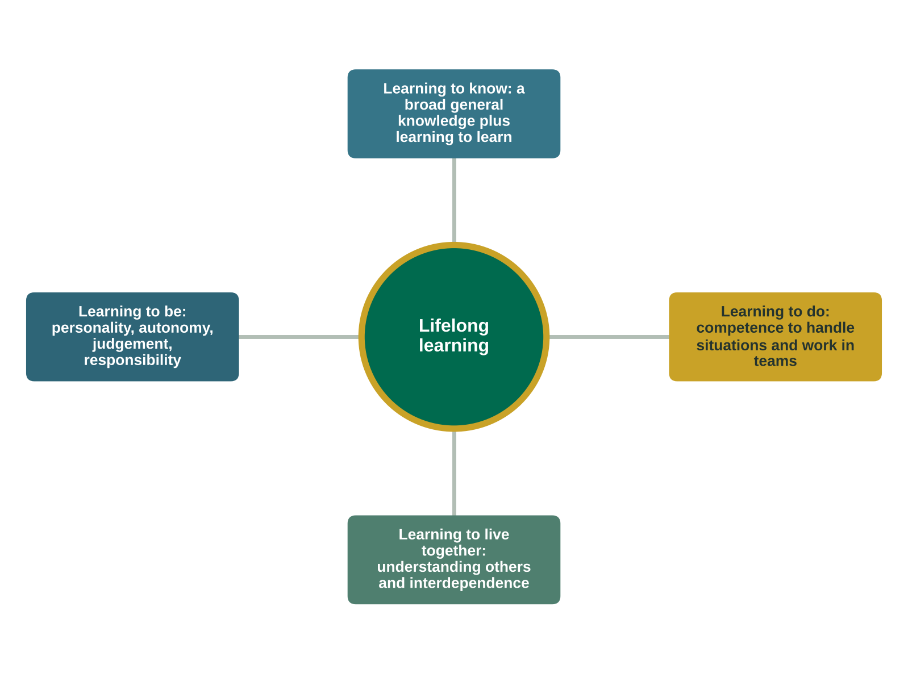
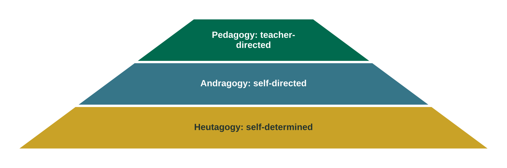
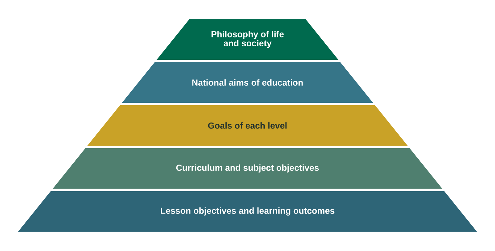
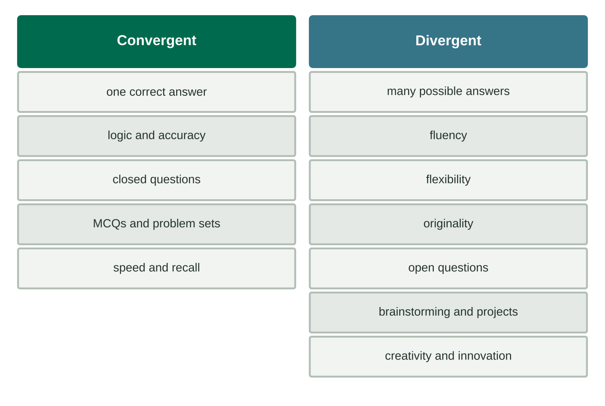
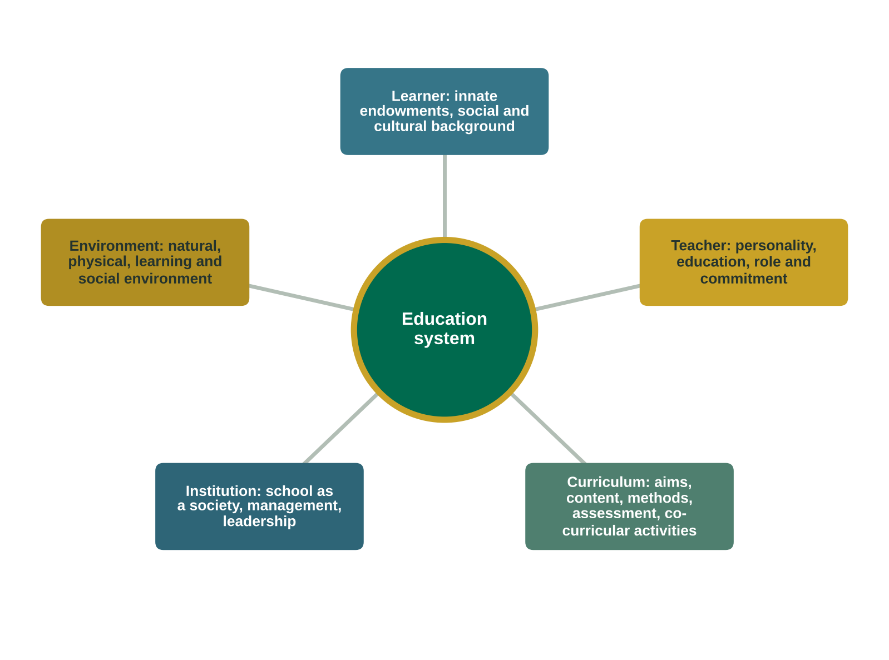

PC 111 শিক্ষার পরিচিতি (Introduction to Education)
শিক্ষার ধারণা, পরিভাষা, লক্ষ্য, শিক্ষণসূত্র, উপাদান এবং একটি জ্ঞানশাখা হিসেবে শিক্ষার পরিচয়
এটি ইংরেজি পাঠ নোটের বাংলা সংস্করণ। পাঠতালিকা ও তথ্যসূত্রের বইয়ের নাম মূল ভাষায় রাখা হয়েছে, যাতে লাইব্রেরিতে সহজে খুঁজে পান।
সূচিপত্র
এই কোর্স সম্পর্কে
এই ভিত্তিমূলক কোর্সটি শিক্ষাবিষয়ক একটি সুনির্দিষ্ট শব্দভান্ডার গড়ে তোলে এবং শিক্ষা কী, এর প্রয়োজন কী, এটি কীভাবে সংগঠিত হয় এবং কেন এটি একটি একাডেমিক জ্ঞানশাখা হিসেবে স্বীকৃতি পাওয়ার যোগ্য, সে সম্পর্কে যুক্তিসংগত ধারণা তৈরি করে। এটি ধ্রুপদি সংজ্ঞাগুলোকে (প্লেটো, রুশো, ডিউই, পিটার্স) সমকালীন বৈশ্বিক কাঠামো (Education for All, SDG 4, Global Citizenship Education) এবং বাংলাদেশের নিজস্ব সাংবিধানিক ও নীতিগত অঙ্গীকারের সঙ্গে যুক্ত করে।
কোর্সের উদ্দেশ্য
"শিক্ষা"-র ধারণা ও দৃষ্টিভঙ্গি এবং বহুল ব্যবহৃত শিক্ষাবিষয়ক পরিভাষা ব্যাখ্যা করা, এবং পরিভাষাগুলো পরস্পরের সঙ্গে কীভাবে সম্পর্কিত তা দেখানো।
শিক্ষার বৈশিষ্ট্য, উপাদান এবং অধিকারভিত্তিক ভিত্তি বর্ণনা করা।
ব্যক্তি, গণতান্ত্রিক সমাজ এবং মানবসম্পদ উন্নয়নের জন্য শিক্ষার লক্ষ্য, উদ্দেশ্য ও কার্যাবলি বিশ্লেষণ করা।
একটি একাডেমিক জ্ঞানশাখা হিসেবে শিক্ষার যৌক্তিকতা প্রতিপাদন করা এবং স্তর ও ক্ষেত্র অনুযায়ী এর পরিধি চিহ্নিত করা।
প্রতিটি ইউনিট অফিশিয়াল পাঠ্যসূচির ক্রম অনুসরণ করে। প্রথমে মূল আলোচনা পড়ুন, তারপর মূল কথা বক্সগুলো, এরপর পরীক্ষার প্রস্তুতি প্রশ্ন দিয়ে নিজেকে যাচাই করুন।
সোনালি বক্স = অবশ্যই মনে রাখার বিষয়। সবুজাভ নীল বক্স = সংজ্ঞা ও পড়ার কৌশল। সবুজ বক্স = বাংলাদেশ প্রেক্ষাপট।
শেষ অধ্যায়টি বিশ্ববিদ্যালয় পরীক্ষার ধরনে একটি প্রশ্নব্যাংক (উত্তরসহ MCQ, সংক্ষিপ্ত ও রচনামূলক প্রশ্ন), এরপর APA 7th রীতিতে পূর্ণ তথ্যসূত্র।
ভর্তি, বাজেট ও নীতি সংক্রান্ত পরিসংখ্যান প্রতি বছর বদলায়। পরীক্ষার আগে BANBEIS, DPE, UGC ও UNESCO-এর সর্বশেষ তথ্য দেখে নিন।
ইউনিট ১: শিক্ষার ধারণা
অধ্যায়ের সারসংক্ষেপ
ইংরেজি শব্দ education-এর তিনটি বহুল উদ্ধৃত লাতিন মূল রয়েছে। প্রতিটি মূল শিক্ষার কাজ সম্পর্কে ভিন্ন ভিন্ন ধারণা বহন করে, তাই পরীক্ষার জন্য এবং উত্তর সুন্দরভাবে শুরু করার জন্য তিনটিই জানা দরকার।
এই অধ্যায়ে আলোচিত বিষয়: "Education" শব্দের উৎপত্তি ও অর্থ; শিক্ষার সংকীর্ণ ও ব্যাপক ধারণা; শিক্ষার সংজ্ঞা: বিভিন্ন দৃষ্টিভঙ্গি ও প্রেক্ষাপট; শিক্ষার বৈশিষ্ট্য; মানবাধিকার হিসেবে শিক্ষা; শিক্ষার ধরন: অনানুষ্ঠানিক, উপানুষ্ঠানিক ও আনুষ্ঠানিক।
মূল পরিভাষা:
- আনুষ্ঠানিক শিক্ষা (formal education) : প্রাথমিক বিদ্যালয় থেকে বিশ্ববিদ্যালয় পর্যন্ত বিস্তৃত, স্তরক্রমিকভাবে কাঠামোবদ্ধ ও কালানুক্রমিকভাবে শ্রেণিবিন্যস্ত শিক্ষাব্যবস্থা; পূর্ণকালীন কারিগরি ও পেশাগত প্রশিক্ষণের বিশেষায়িত কার্যক্রম ও প্রতিষ্ঠানও এর অন্তর্ভুক্ত।
- উপানুষ্ঠানিক শিক্ষা (non-formal education) : প্রতিষ্ঠিত আনুষ্ঠানিক ব্যবস্থার বাইরে পরিচালিত যেকোনো সংগঠিত শিক্ষামূলক কার্যক্রম, যা স্বতন্ত্রভাবে অথবা কোনো বৃহত্তর কার্যক্রমের অংশ হিসেবে পরিচালিত হয় এবং যার উদ্দেশ্য সুনির্দিষ্ট শিক্ষার্থীগোষ্ঠী ও শিখন উদ্দেশ্য পূরণ করা।
- অনানুষ্ঠানিক শিক্ষা (informal education) : প্রকৃত অর্থে জীবনব্যাপী একটি প্রক্রিয়া, যার মাধ্যমে প্রত্যেক ব্যক্তি দৈনন্দিন অভিজ্ঞতা এবং নিজের পরিবেশের শিক্ষণীয় প্রভাব ও উৎস থেকে দৃষ্টিভঙ্গি, মূল্যবোধ, দক্ষতা ও জ্ঞান অর্জন করে: পরিবার, প্রতিবেশী, কর্মক্ষেত্র, খেলাধুলা, বাজার, গ্রন্থাগার এবং…
মনে রাখার মূল বিষয়:
- পরীক্ষায় প্রায়ই "educare" ও "educere"-এর তুলনা করতে বলা হয়।
শিক্ষাক্রমে যা বলা হয়েছেইউনিট ১: শিক্ষার ধারণা · ৬ সংযোগ ঘণ্টা
এই ইউনিট শেষে শিক্ষার্থীরা যা পারবে
- ‘শিক্ষা’-র মৌলিক ধারণা ও সংজ্ঞাসমূহ বর্ণনা করা
- শিক্ষার বিভিন্ন ধরন চিহ্নিত করা
- ‘Education’ ও ‘শিক্ষা’ শব্দের উৎপত্তি ও অর্থ
- শিক্ষার ব্যাপক ও সুনির্দিষ্ট ধারণা
- শিক্ষার সংজ্ঞা: বিভিন্ন দৃষ্টিভঙ্গি ও প্রেক্ষাপট
- শিক্ষার ধরন: অনানুষ্ঠানিক, উপানুষ্ঠানিক ও আনুষ্ঠানিক
১.১ "Education" শব্দের উৎপত্তি ও অর্থ
ইংরেজি শব্দ education-এর তিনটি বহুল উদ্ধৃত লাতিন মূল রয়েছে। প্রতিটি মূল শিক্ষার কাজ সম্পর্কে ভিন্ন ভিন্ন ধারণা বহন করে, তাই পরীক্ষার জন্য এবং উত্তর সুন্দরভাবে শুরু করার জন্য তিনটিই জানা দরকার।
| লাতিন মূল | আক্ষরিক অর্থ | নিহিত শিক্ষা-দৃষ্টিভঙ্গি |
|---|---|---|
| Educare | লালনপালন করা, পুষ্টি জোগানো, প্রতিপালন করা | পরিচর্যা হিসেবে শিক্ষা: মালী যেমন গাছের যত্ন নেন, প্রাপ্তবয়স্ক ব্যক্তিও তেমনি শিশুকে গড়ে তোলেন |
| Educere | বাইরে বের করে আনা, নিষ্কাশন করা | বিকশিতকরণ হিসেবে শিক্ষা: শিক্ষার্থীর মধ্যে আগে থেকেই বিদ্যমান সহজাত সম্ভাবনাকে বের করে আনা |
| Educatum | শিক্ষাদান বা প্রশিক্ষণের কাজ | সুপরিকল্পিত নির্দেশনা হিসেবে শিক্ষা, যা শিক্ষকের ভূমিকার ওপর গুরুত্ব আরোপ করে |
প্রধান দুটি মূল শিক্ষাচিন্তায় দীর্ঘদিনের একটি টানাপোড়েনের দিকে ইঙ্গিত করে। Educare বোঝায় যে বাইরে থেকে কিছু (জ্ঞান, সংস্কৃতি, মূল্যবোধ) ভেতরে দেওয়া হয়, আর educere বোঝায় যে আগে থেকে বিদ্যমান কিছুকে বের করে আনা হয়। অধিকাংশ আধুনিক সংজ্ঞা উভয়কে ধারণ করার চেষ্টা করে: শিক্ষা সাংস্কৃতিক উত্তরাধিকার হস্তান্তর করে এবং ব্যক্তির নিজস্ব সামর্থ্যের বিকাশ ঘটায়।
"শিক্ষা" (Shikkha)
বাংলা শব্দ শিক্ষা এসেছে সংস্কৃত ধাতু শাস্ (shas) থেকে, যার অর্থ শাসন করা, নিয়ন্ত্রণ করা, সংযত করা বা নির্দেশ দেওয়া। ধ্রুপদি ভারতীয় ঐতিহ্যে সংশ্লিষ্ট শব্দ বিদ্যা (বিদ্ ধাতু থেকে, অর্থ জানা) এমন জ্ঞান বা শিখনকে বোঝায় যা মুক্তি দেয় ("সা বিদ্যা যা বিমুক্তয়ে", অর্থাৎ যা মুক্তি দেয় তা-ই বিদ্যা)। তাই শিক্ষা-র মূল অর্থ শৃঙ্খলাবদ্ধ ও নির্দেশিত শিখনের ওপর জোর দেয়, আর বিদ্যা জোর দেয় জ্ঞানের মুক্তিদায়ী উদ্দেশ্যের ওপর।
পরীক্ষায় প্রায়ই "educare" ও "educere"-এর তুলনা করতে বলা হয়। লিখুন যে educare হলো সংকীর্ণ, বাইরে থেকে ভেতরে দৃষ্টিভঙ্গি (নির্দেশনা ও লালনপালন) এবং educere হলো ব্যাপক, ভেতর থেকে বাইরে দৃষ্টিভঙ্গি (সুপ্ত ক্ষমতার বিকাশ); তারপর যুক্তি দিন যে একটি পূর্ণাঙ্গ সংজ্ঞা উভয়কে সমন্বিত করে।
১.২ শিক্ষার সংকীর্ণ ও ব্যাপক ধারণা
সংকীর্ণ (সুনির্দিষ্ট) ধারণা। এই অর্থে শিক্ষা হলো বিদ্যালয় বা অন্য কোনো প্রতিষ্ঠানে একটি সীমিত সময়ের জন্য, নির্ধারিত শিক্ষাক্রম (curriculum) অনুযায়ী, যোগ্য শিক্ষকের মাধ্যমে প্রদত্ত এবং পরীক্ষার মাধ্যমে প্রত্যয়িত সুপরিকল্পিত নির্দেশনা। এটি পরিমাপ করা সহজ, কিন্তু মানুষ প্রকৃতপক্ষে যা শেখে তার বেশির ভাগই এতে উপেক্ষিত থাকে।
ব্যাপক (সাধারণ) ধারণা। শিক্ষা একটি জীবনব্যাপী প্রক্রিয়া, যা বিদ্যালয়ের পাশাপাশি পরিবার, সমাজ, কর্মক্ষেত্র, গণমাধ্যম, ধর্ম ও খেলাধুলা থেকে প্রাপ্ত এমন প্রতিটি অভিজ্ঞতাকে অন্তর্ভুক্ত করে যা একজন মানুষের জ্ঞান, দক্ষতা, দৃষ্টিভঙ্গি ও চরিত্র গঠন করে। জে. এস. ম্যাকেঞ্জি (J. S. Mackenzie) যেমন বলেছেন, ব্যাপক অর্থে শিক্ষা হলো "এমন একটি প্রক্রিয়া যা সারাজীবন চলতে থাকে এবং জীবনের প্রায় প্রতিটি অভিজ্ঞতা দ্বারা যা এগিয়ে যায়"।
| ভিত্তি | সংকীর্ণ ধারণা | ব্যাপক ধারণা |
|---|---|---|
| সময়সীমা | বিদ্যালয়ে অধ্যয়নের বছরগুলোতে সীমাবদ্ধ | জীবনব্যাপী (জন্ম থেকে মৃত্যু পর্যন্ত) |
| স্থান | বিদ্যালয়, কলেজ, বিশ্ববিদ্যালয় | সর্বত্র: গৃহ, সমাজ, কর্মক্ষেত্র, গণমাধ্যম |
| সংস্থা | শিক্ষক-নির্দেশিত, সুপরিকল্পিত | সুপরিকল্পিত ও আকস্মিক, বহু মাধ্যম |
| বিষয়বস্তু | নির্ধারিত শিক্ষাক্রম | জীবনের সব অভিজ্ঞতা |
| ফলাফল পরিমাপের মাধ্যম | পরীক্ষা, সনদপত্র | বৃদ্ধি, অভিযোজন, জীবনের মান |
১.৩ শিক্ষার সংজ্ঞা: বিভিন্ন দৃষ্টিভঙ্গি ও প্রেক্ষাপট
কোনো একক সংজ্ঞা সবার কাছে গ্রহণযোগ্য নয়, কারণ প্রতিটি সংজ্ঞাই মানবপ্রকৃতি, জ্ঞান ও সমাজ সম্পর্কে একটি নির্দিষ্ট দৃষ্টিভঙ্গি প্রতিফলিত করে। সারণিতে ধ্রুপদি সংজ্ঞাগুলোকে দৃষ্টিভঙ্গি অনুযায়ী সাজানো হয়েছে। প্রবক্তার নাম ও মূল বাক্যাংশটি মনে রাখুন।
| চিন্তাবিদ | সংজ্ঞা (মূল বাক্যাংশ) | দৃষ্টিভঙ্গি |
|---|---|---|
| প্লেটো (Plato) | শিক্ষা হলো "যথাসময়ে আনন্দ ও বেদনা অনুভব করার সামর্থ্য", এবং এটি দেহ ও আত্মার মধ্যে সেই সমস্ত সৌন্দর্য ও পূর্ণতার বিকাশ ঘটায় যা তারা অর্জন করতে সক্ষম | ভাববাদী / নৈতিক |
| অ্যারিস্টটল (Aristotle) | "সুস্থ দেহে সুস্থ মন সৃষ্টি করা" | বাস্তববাদী / সামগ্রিক |
| রুশো (Rousseau) | প্রকৃতি অনুযায়ী শিশুর শিক্ষা; "প্রকৃতির স্রষ্টার হাত থেকে যা আসে তার সবই ভালো" | প্রকৃতিবাদী |
| পেস্তালৎসি (Pestalozzi) | "মানুষের সহজাত শক্তিগুলোর স্বাভাবিক, সুষম ও প্রগতিশীল বিকাশ" | বিকাশমূলক |
| ফ্রয়েবেল (Froebel) | "এমন একটি প্রক্রিয়া যার মাধ্যমে শিশু তার অন্তর্নিহিত সত্তাকে বাইরে প্রকাশ করে" | বিকাশমূলক / ভাববাদী |
| স্বামী বিবেকানন্দ (Swami Vivekananda) | "মানুষের মধ্যে আগে থেকেই বিদ্যমান পূর্ণতার প্রকাশ" | আধ্যাত্মিক / ভাববাদী |
| এম. কে. গান্ধী (M. K. Gandhi) | "শিশু ও মানুষের মধ্যে যা কিছু শ্রেষ্ঠ, অর্থাৎ দেহ, মন ও আত্মার সর্বাঙ্গীণ বিকাশ সাধন" | সামগ্রিক |
| রবীন্দ্রনাথ ঠাকুর (Rabindranath Tagore) | "সর্বোচ্চ শিক্ষা সেটিই যা আমাদের কেবল তথ্য দেয় না, বরং আমাদের জীবনকে সমগ্র অস্তিত্বের সঙ্গে সামঞ্জস্যপূর্ণ করে তোলে" | মানবতাবাদী / প্রকৃতিবাদী |
| জন ডিউই (John Dewey) | "অভিজ্ঞতার পুনর্গঠন বা পুনর্বিন্যাস, যা অভিজ্ঞতার অর্থকে সমৃদ্ধ করে এবং পরবর্তী অভিজ্ঞতার গতিপথ নিয়ন্ত্রণের সামর্থ্য বাড়ায়" | প্রয়োগবাদী |
| এমিল দুর্খেইম (Émile Durkheim) | "যারা এখনো সামাজিক জীবনের জন্য প্রস্তুত নয়, তাদের ওপর প্রাপ্তবয়স্ক প্রজন্মের প্রয়োগকৃত প্রভাব" | সমাজতাত্ত্বিক |
| আর. এস. পিটার্স (R. S. Peters) | নৈতিকভাবে গ্রহণযোগ্য উপায়ে মূল্যবান কার্যক্রমে দীক্ষা প্রদান | বিশ্লেষণমূলক / দার্শনিক |
শিক্ষার তিনটি মানদণ্ড: পিটার্সের অভিমত
বিশ্লেষণমূলক দার্শনিক আর. এস. পিটার্স (R. S. Peters) (1966) যুক্তি দেন যে কোনো প্রক্রিয়া কেবল তখনই "শিক্ষা" হিসেবে গণ্য হবে, যখন তা তিনটি মানদণ্ড পূরণ করে। এটি এই কোর্সের সবচেয়ে গুরুত্বপূর্ণ পরীক্ষোপযোগী ধারণাগুলোর একটি।
আদর্শগত (মূল্যবত্তা) মানদণ্ড। শিক্ষা বলতে বোঝায় মূল্যবান বিষয়কে এমন ব্যক্তিদের কাছে হস্তান্তর করা, যারা এর প্রতি অঙ্গীকারবদ্ধ হয়ে ওঠে। পকেটমারকে প্রশিক্ষণ দেওয়া শিক্ষা নয়।
জ্ঞানীয় (জ্ঞান) মানদণ্ড। শিক্ষায় অবশ্যই জ্ঞান ও উপলব্ধি এবং কিছুটা "জ্ঞানীয় দৃষ্টিভঙ্গি" থাকতে হবে, কেবল নিষ্প্রাণ দক্ষতা নয়।
পদ্ধতিগত মানদণ্ড। যেসব পদ্ধতিতে শিক্ষার্থীর সচেতনতা ও স্বেচ্ছাসম্মতি থাকে না, শিক্ষা সেগুলোকে বাদ দেয়; তাই মতাদর্শ চাপিয়ে দেওয়া (indoctrination) ও অনুবর্তন (conditioning) শিক্ষা হিসেবে গণ্য হয় না।
"শিক্ষিত হওয়া মানে কোনো গন্তব্যে পৌঁছে যাওয়া নয়; বরং ভিন্ন দৃষ্টিভঙ্গি নিয়ে পথ চলা।"
R. S. Peters (1965), Education as initiation
দ্বিমেরু ও ত্রিমেরু দৃষ্টিভঙ্গি
জন অ্যাডামস (John Adams) শিক্ষাকে শিক্ষাদাতা ও শিক্ষার্থীর মধ্যে একটি দ্বিমেরু (bipolar) প্রক্রিয়া হিসেবে বর্ণনা করেছেন: একটি ব্যক্তিত্ব অন্য একটি ব্যক্তিত্বের বিকাশকে পরিবর্তন করার জন্য তার ওপর ক্রিয়া করে। ডিউই এর সঙ্গে সমাজকে যুক্ত করে শিক্ষাকে শিক্ষক, শিশু ও সামাজিক পরিবেশ (শিক্ষাক্রম) নিয়ে গঠিত একটি ত্রিমেরু (tripolar) প্রক্রিয়া হিসেবে বর্ণনা করেন। পরবর্তী লেখকেরা আরও উপাদান যুক্ত করেন, যা থেকে ইউনিট ৫-এর পাঁচ-উপাদানবিশিষ্ট মডেলটি গড়ে ওঠে।

চিত্র ১। দ্বিমেরু থেকে ত্রিমেরু: সংজ্ঞাগুলো কীভাবে শিক্ষার উপাদানের পরিসর বিস্তৃত করেছে
১.৪ শিক্ষার বৈশিষ্ট্য
এই সংজ্ঞাগুলোকে একত্র করলে শিক্ষার বৈশিষ্ট্যগুলো এভাবে চিহ্নিত করা যায়:
একটি উদ্দেশ্যমূলক প্রক্রিয়া। এটি কাঙ্ক্ষিত লক্ষ্যের দিকে পরিচালিত।
একটি জীবনব্যাপী প্রক্রিয়া। এটি শৈশবে সীমাবদ্ধ নয়।
একটি দ্বিমেরু বা ত্রিমেরু প্রক্রিয়া। এতে শিক্ষার্থী, শিক্ষক ও সমাজ জড়িত।
সামগ্রিক। এটি জ্ঞানীয়, আবেগীয় ও মনোপেশিজ ক্ষেত্রের বিকাশ ঘটায়।
সামাজিক ও সাংস্কৃতিক। এটি সংস্কৃতিকে সংরক্ষণ, হস্তান্তর ও নবায়ন করে।
গতিশীল। সমাজ, জ্ঞান ও প্রযুক্তির পরিবর্তনের সঙ্গে এর লক্ষ্য ও পদ্ধতি পরিবর্তিত হয়।
একটি মানবাধিকার ও জনকল্যাণমূলক সম্পদ। মানবাধিকারের সর্বজনীন ঘোষণাপত্রের (১৯৪৮) ২৬ অনুচ্ছেদ এবং বাংলাদেশের সংবিধানের ১৭ অনুচ্ছেদ উভয়েই একে স্বীকৃতি দেয়।
গণপ্রজাতন্ত্রী বাংলাদেশের সংবিধানের ১৭ অনুচ্ছেদ রাষ্ট্রকে কার্যকর ব্যবস্থা গ্রহণে বাধ্য করে, যাতে (a) একই পদ্ধতির, গণমুখী ও সর্বজনীন শিক্ষাব্যবস্থা প্রতিষ্ঠা এবং আইনের দ্বারা নির্ধারিত স্তর পর্যন্ত সকল শিশুর জন্য অবৈতনিক ও বাধ্যতামূলক শিক্ষা নিশ্চিত করা যায়, (b) সমাজের প্রয়োজনের সঙ্গে শিক্ষাকে সংগতিপূর্ণ করা এবং যথাযথ প্রশিক্ষণপ্রাপ্ত ও সদিচ্ছাপ্রণোদিত নাগরিক সৃষ্টি করা যায়, এবং (c) আইনের দ্বারা নির্ধারিত সময়ের মধ্যে নিরক্ষরতা দূর করা যায়। ১৫ অনুচ্ছেদে শিক্ষাকে জীবনধারণের মৌলিক উপকরণগুলোর অন্তর্ভুক্ত করা হয়েছে।
১.৫ মানবাধিকার হিসেবে শিক্ষা
শিক্ষা নিজেই একটি অধিকার, আবার একটি "সক্ষমকারী অধিকার"ও, যা স্বাস্থ্য, কর্মসংস্থান ও রাজনৈতিক অংশগ্রহণের মতো অন্যান্য অধিকারের দ্বার উন্মোচন করে। প্রধান আন্তর্জাতিক দলিলগুলো হলো:
UDHR (1948), অনুচ্ছেদ ২৬: প্রত্যেকেরই শিক্ষার অধিকার রয়েছে; অন্তত প্রাথমিক পর্যায়ে শিক্ষা অবৈতনিক ও বাধ্যতামূলক হবে।
ICESCR (1966), অনুচ্ছেদ ১৩–১৪: অবৈতনিক মাধ্যমিক ও উচ্চশিক্ষার ক্রমান্বয়ে প্রবর্তন।
CRC (1989), অনুচ্ছেদ ২৮–২৯: শিশুর শিক্ষার অধিকার এবং শিক্ষার লক্ষ্য (ব্যক্তিত্বের বিকাশ, মানবাধিকারের প্রতি শ্রদ্ধা, দায়িত্বশীল জীবনের জন্য প্রস্তুতি)।
UNCRPD (2006), অনুচ্ছেদ ২৪: প্রতিবন্ধী ব্যক্তিদের জন্য একীভূত শিক্ষা (inclusive education)।
কাতারিনা তোমাশেভস্কির (Katarina Tomaševski) 4-A কাঠামো (2001) এই অধিকার বাস্তবায়িত হচ্ছে কি না তা মূল্যায়নের সবচেয়ে বহুল ব্যবহৃত উপায়: শিক্ষাকে অবশ্যই প্রাপ্য (Available), প্রবেশযোগ্য (Accessible), গ্রহণযোগ্য (Acceptable) ও অভিযোজনযোগ্য (Adaptable) হতে হবে।

চিত্র ২। শিক্ষার অধিকারের জন্য তোমাশেভস্কির 4-A কাঠামো
১.৬ শিক্ষার ধরন: অনানুষ্ঠানিক, উপানুষ্ঠানিক ও আনুষ্ঠানিক
এ বিষয়ে প্রভাবশালী শ্রেণিবিভাগটি এসেছে বিশ্বব্যাংক (World Bank) ও International Council for Educational Development-এর জন্য ফিলিপ কুম্বস (Philip Coombs) ও মনজুর আহমেদ (Manzoor Ahmed)-এর কাজ থেকে (Coombs, Prosser & Ahmed, 1973; Coombs & Ahmed, 1974)।
আনুষ্ঠানিক শিক্ষা (formal education): প্রাথমিক বিদ্যালয় থেকে বিশ্ববিদ্যালয় পর্যন্ত বিস্তৃত, স্তরক্রমিকভাবে কাঠামোবদ্ধ ও কালানুক্রমিকভাবে শ্রেণিবিন্যস্ত শিক্ষাব্যবস্থা; পূর্ণকালীন কারিগরি ও পেশাগত প্রশিক্ষণের বিশেষায়িত কার্যক্রম ও প্রতিষ্ঠানও এর অন্তর্ভুক্ত।
উপানুষ্ঠানিক শিক্ষা (non-formal education): প্রতিষ্ঠিত আনুষ্ঠানিক ব্যবস্থার বাইরে পরিচালিত যেকোনো সংগঠিত শিক্ষামূলক কার্যক্রম, যা স্বতন্ত্রভাবে অথবা কোনো বৃহত্তর কার্যক্রমের অংশ হিসেবে পরিচালিত হয় এবং যার উদ্দেশ্য সুনির্দিষ্ট শিক্ষার্থীগোষ্ঠী ও শিখন উদ্দেশ্য পূরণ করা।
অনানুষ্ঠানিক শিক্ষা (informal education): প্রকৃত অর্থে জীবনব্যাপী একটি প্রক্রিয়া, যার মাধ্যমে প্রত্যেক ব্যক্তি দৈনন্দিন অভিজ্ঞতা এবং নিজের পরিবেশের শিক্ষণীয় প্রভাব ও উৎস থেকে দৃষ্টিভঙ্গি, মূল্যবোধ, দক্ষতা ও জ্ঞান অর্জন করে: পরিবার, প্রতিবেশী, কর্মক্ষেত্র, খেলাধুলা, বাজার, গ্রন্থাগার ও গণমাধ্যম।
| বৈশিষ্ট্য | আনুষ্ঠানিক | উপানুষ্ঠানিক | অনানুষ্ঠানিক |
|---|---|---|---|
| সংগঠন | অত্যন্ত কাঠামোবদ্ধ, শ্রেণিবিন্যস্ত | সংগঠিত কিন্তু নমনীয় | অসংগঠিত, আকস্মিক |
| শিক্ষাক্রম | নির্দিষ্ট, কেন্দ্রীয়ভাবে নির্ধারিত | চাহিদাভিত্তিক, শিক্ষার্থীর জন্য প্রাসঙ্গিক | নেই |
| ভর্তি ও বয়স | বয়সনির্দিষ্ট, ভর্তির শর্তযুক্ত | উন্মুক্ত, যেকোনো বয়স | সবাই, সব সময় |
| মেয়াদ | দীর্ঘ, পূর্ণকালীন | স্বল্প, খণ্ডকালীন | জীবনব্যাপী |
| সনদায়ন | ডিগ্রি, সনদপত্র | কখনো কখনো (সমতা অর্জন সম্ভব) | নেই |
| শিক্ষক | প্রশিক্ষিত পেশাজীবী | সহায়তাকারী, প্রায়ই সমাজেরই একজন | যে কেউ (মা-বাবা, সমবয়সী, গণমাধ্যম) |
| বাংলাদেশের উদাহরণ | সরকারি প্রাথমিক বিদ্যালয়, পাবলিক বিশ্ববিদ্যালয় | ব্র্যাক (BRAC) বিদ্যালয়, BNFE-র সাক্ষরতা কেন্দ্র, দ্বিতীয় সুযোগ (Second Chance) কার্যক্রম | মা-বাবার কাছ থেকে কৃষিকাজ শেখা, টেলিভিশন থেকে শেখা |

চিত্র ৩। জীবনব্যাপী শিখন ব্যবস্থায় শিক্ষার তিনটি ধরন পরস্পরকে আংশিকভাবে আচ্ছাদিত করে
অ্যালান রজার্স (Alan Rogers) (2005) যুক্তি দেন যে তিনটি ধরনকে আলাদা আলাদা খোপ হিসেবে না দেখে একটি নিরবচ্ছিন্ন ধারা (continuum) হিসেবে দেখাই শ্রেয়। বিদ্যালয়ের শিক্ষাসফর হলো অনানুষ্ঠানিক শিখন ব্যবহার করে পরিচালিত আনুষ্ঠানিক শিক্ষা; আবার সমতাসহ জাতীয় শিক্ষাক্রম অনুসরণকারী একটি সাক্ষরতা কেন্দ্র হলো "আনুষ্ঠানিকীকৃত" উপানুষ্ঠানিক শিক্ষা। রজার্স "নমনীয় বিদ্যালয়শিক্ষা" (আনুষ্ঠানিক শিক্ষার ফলাফল অর্জনের একটি কম ব্যয়বহুল বিকল্প পথ হিসেবে উপানুষ্ঠানিক শিক্ষা) এবং "অংশগ্রহণমূলক শিক্ষা" (শিক্ষার্থীদের নিজস্ব চাহিদা থেকে গড়ে ওঠা উপানুষ্ঠানিক শিক্ষা)-এর মধ্যে পার্থক্য করেন।
সম্ভাব্য প্রশ্ন: "বিভিন্ন দৃষ্টিভঙ্গি থেকে শিক্ষার সংজ্ঞা দিন।" "বাংলাদেশের উদাহরণসহ আনুষ্ঠানিক, উপানুষ্ঠানিক ও অনানুষ্ঠানিক শিক্ষার মধ্যে পার্থক্য করুন।" "পিটার্সের শিক্ষার মানদণ্ডগুলো ব্যাখ্যা করুন।"
এই ইউনিট পড়ার আগে শিক্ষার একটি এক-বাক্যের নিজস্ব সংজ্ঞা লিখুন, তারপর নির্ধারণ করুন সেটি "educare"-এর দিকে ঝুঁকে আছে, নাকি "educere"-এর দিকে। এতে শব্দের ব্যুৎপত্তি আপনার নিজস্ব পূর্বধারণা নিয়ে ভাবনার উপলক্ষ হয়ে ওঠে।
ইউনিট ২: শিক্ষার পরিভাষা
অধ্যায়ের সারসংক্ষেপ
সাক্ষরতা। UNESCO-র ১৯৫৮ সালের সংজ্ঞাটি এখনো মানদণ্ড হিসেবে বিবেচিত: "যে ব্যক্তি নিজের দৈনন্দিন জীবন সম্পর্কে একটি ছোট ও সরল বিবৃতি বুঝে পড়তে ও লিখতে পারেন, তিনি সাক্ষর।"
এই অধ্যায়ে আলোচিত বিষয়: সাক্ষরতা, কার্যকরী সাক্ষরতা ও মৌলিক শিক্ষা; উদ্দেশ্য অনুযায়ী শিক্ষার প্রকারভেদ; সর্বজনীন, বাধ্যতামূলক ও জরুরি অবস্থায় শিক্ষা; সবার জন্য শিক্ষা (EFA), গণশিক্ষা, দ্বিতীয় সুযোগের শিক্ষা, অব্যাহত শিক্ষা ও জীবনব্যাপী শিক্ষা; শিক্ষায় অংশগ্রহণ ও দক্ষতার সূচক; শিক্ষাক্রম ও পাঠ্যসূচি; শিক্ষণবিজ্ঞান, বয়স্ক শিক্ষণবিজ্ঞান ও স্ব-নির্ধারিত শিক্ষণবিজ্ঞান; জেন্ডার সমতা, ন্যায্যতা ও একীভূতকরণ; বিশেষ, সমন্বিত ও একীভূত শিক্ষা; মূল্যবোধ শিক্ষা ও নাগরিকত্ব শিক্ষা।
মনে রাখার মূল বিষয়:
- GER ১০০%-এর বেশি হওয়ার অর্থ এই নয় যে প্রতিটি শিশু বিদ্যালয়ে আছে; এটি নির্ধারিত বয়সের চেয়ে বেশি বা কম বয়সী শিক্ষার্থীর ভর্তির ইঙ্গিত দেয়, যার কারণ প্রায়ই দেরিতে ভর্তি বা একই শ্রেণিতে পুনরাবৃত্তি।
শিক্ষাক্রমে যা বলা হয়েছেইউনিট ২: শিক্ষার পরিভাষা · ৮ সংযোগ ঘণ্টা
এই ইউনিট শেষে শিক্ষার্থীরা যা পারবে
- শিক্ষার বিভিন্ন পরিভাষার সংজ্ঞা দেওয়া
- শিক্ষায় সমতা, ন্যায্যতা, জরুরি অবস্থা ও একীভূতকরণ ব্যাখ্যা করা
- সাক্ষরতা ও কার্যকরী সাক্ষরতা, মৌলিক শিক্ষা ইত্যাদি
- সাধারণ শিক্ষা, পেশাগত শিক্ষা, ধর্মীয় শিক্ষা, কারিগরি ও বৃত্তিমূলক
- সর্বজনীন শিক্ষা, বাধ্যতামূলক শিক্ষা, জরুরি অবস্থায় শিক্ষা (EiE) ইত্যাদি
- সবার জন্য শিক্ষা, গণশিক্ষা, দ্বিতীয় সুযোগের শিক্ষা, অব্যাহত শিক্ষা, জীবনব্যাপী
- ক্যাচমেন্ট এলাকা, নিট ভর্তি ও মোট ভর্তি, ঝরে পড়া, পুনরাবৃত্তি, চক্র সমাপন,
- শিক্ষাক্রম ও পাঠ্যসূচি
- শিক্ষণবিজ্ঞান, বয়স্ক শিক্ষণবিজ্ঞান ও স্ব-নির্ধারিত শিক্ষণবিজ্ঞান ইত্যাদি
- শিক্ষায় জেন্ডার সমতা, ন্যায্যতা ও একীভূতকরণ
- বিশেষ শিক্ষা, সমন্বিত শিক্ষা ও একীভূত শিক্ষা
- মূল্যবোধ শিক্ষা, নাগরিকত্ব শিক্ষা ইত্যাদি
২.১ সাক্ষরতা, কার্যকরী সাক্ষরতা ও মৌলিক শিক্ষা
সাক্ষরতা (literacy)। UNESCO-র ১৯৫৮ সালের সংজ্ঞাটি এখনো মানদণ্ড হিসেবে বিবেচিত: "যে ব্যক্তি নিজের দৈনন্দিন জীবন সম্পর্কে একটি ছোট ও সরল বিবৃতি বুঝে পড়তে ও লিখতে পারেন, তিনি সাক্ষর।"
কার্যকরী সাক্ষরতা (functional literacy)। UNESCO (1978): "যে ব্যক্তি তাঁর গোষ্ঠী ও সমাজের কার্যকর কর্মকাণ্ডের জন্য সাক্ষরতা প্রয়োজন এমন সব কাজে অংশ নিতে পারেন, এবং নিজের ও সমাজের উন্নয়নের জন্য পড়া, লেখা ও হিসাব করার দক্ষতা অব্যাহতভাবে ব্যবহার করতে পারেন, তিনি কার্যকরীভাবে সাক্ষর।" সুতরাং কার্যকরী সাক্ষরতা 3R-কে (পড়া, লেখা, গণনা) জীবন দক্ষতা, জীবিকা ও নাগরিক অংশগ্রহণের সঙ্গে যুক্ত করে।
সমকালীন চিন্তায় বহুবচনে সাক্ষরতাসমূহ (literacies) (ডিজিটাল, আর্থিক, স্বাস্থ্য, গণমাধ্যম ও পরিবেশ সাক্ষরতা) এবং সাক্ষর/নিরক্ষর এই দ্বিবিভাজনের পরিবর্তে দক্ষতার একটি নিরবচ্ছিন্ন ধারা হিসেবে সাক্ষরতার কথা বলা হয় (UNESCO, 2006, EFA Global Monitoring Report: Literacy for Life)। পাওলো ফ্রেইরি (Paulo Freire)-র সমালোচনামূলক সাক্ষরতা (critical literacy) ধারণা (শব্দ ও বিশ্বকে পাঠ করা) এতে একটি রাজনৈতিক মাত্রা যুক্ত করে।
মৌলিক শিক্ষা (basic education)। সবার জন্য শিক্ষা বিষয়ক বিশ্ব ঘোষণা (World Declaration on Education for All; জমতিয়েন, ১৯৯০) একে মৌলিক শিখন চাহিদা-র ভিত্তিতে সংজ্ঞায়িত করেছে: অপরিহার্য শিখন উপকরণ (সাক্ষরতা, মৌখিক প্রকাশ, গাণিতিক দক্ষতা ও সমস্যা সমাধান) এবং মৌলিক শিখন বিষয়বস্তু (জ্ঞান, দক্ষতা, মূল্যবোধ ও মনোভাব), যা মানুষের টিকে থাকা, নিজের সামর্থ্যের বিকাশ, মর্যাদার সঙ্গে জীবনযাপন ও কাজ করা, উন্নয়নে পূর্ণ অংশগ্রহণ, জীবনের মান উন্নয়ন, অবহিত সিদ্ধান্ত গ্রহণ এবং শিখন অব্যাহত রাখার জন্য প্রয়োজন। বাংলাদেশে প্রাথমিক শিক্ষা (এবং জাতীয় শিক্ষানীতি ২০১০ অনুযায়ী অষ্টম শ্রেণি পর্যন্ত সম্প্রসারণ) মৌলিক শিক্ষার মূল অংশ, যার পরিপূরক হিসেবে বিদ্যালয়বহির্ভূত শিশু ও বয়স্কদের জন্য উপানুষ্ঠানিক পথ রয়েছে।
২.২ উদ্দেশ্য অনুযায়ী শিক্ষার প্রকারভেদ
সাধারণ শিক্ষা (general education): ভাষা, বিজ্ঞান, সমাজবিজ্ঞান ও মানবিক বিষয়ে ব্যাপক ও উদার শিক্ষা, যা সকল নাগরিকের সাধারণ ভিত্তি।
পেশাগত শিক্ষা (professional education): বিশেষায়িত জ্ঞানভান্ডার ও নৈতিক আচরণবিধিসম্পন্ন কোনো পেশার জন্য প্রস্তুতি, যেমন চিকিৎসা, আইন, প্রকৌশল বা শিক্ষকতা।
ধর্মীয় শিক্ষা (religious education): কোনো ধর্মীয় ঐতিহ্য সম্পর্কে এবং সেই ঐতিহ্যের মধ্যে শিক্ষা। বাংলাদেশে এটি বিদ্যালয়ের একটি বাধ্যতামূলক বিষয় (ইসলাম, হিন্দু, বৌদ্ধ, খ্রিষ্টধর্ম) এবং মাদ্রাসা শিক্ষার মূল ভিত্তি।
কারিগরি ও বৃত্তিমূলক শিক্ষা ও প্রশিক্ষণ (TVET): মৌলিক ট্রেড কোর্স থেকে ডিপ্লোমা প্রকৌশল পর্যন্ত পেশাগত দক্ষতার শিক্ষা, যা বাংলাদেশে বাংলাদেশ কারিগরি শিক্ষা বোর্ড এবং জাতীয় দক্ষতা যোগ্যতা কাঠামো (National Skills Qualification Framework)-এর মাধ্যমে নিয়ন্ত্রিত হয়।
২.৩ সর্বজনীন, বাধ্যতামূলক ও জরুরি অবস্থায় শিক্ষা
সর্বজনীন শিক্ষা (universal education): সংশ্লিষ্ট বয়সের প্রতিটি শিশুর জন্য বৈষম্যহীনভাবে প্রাপ্য শিক্ষা। সর্বজনীন প্রাথমিক শিক্ষা (UPE) ছিল সহস্রাব্দ উন্নয়ন লক্ষ্যমাত্রার একটি (MDG 2)।
বাধ্যতামূলক শিক্ষা (compulsory education): যে শিক্ষায় প্রতিটি শিশুর অংশগ্রহণ আইনগতভাবে বাধ্যতামূলক। বাংলাদেশে প্রাথমিক শিক্ষা (বাধ্যতামূলককরণ) আইন ১৯৯০ প্রাথমিক শিক্ষাকে বাধ্যতামূলক করে; জাতীয় শিক্ষানীতি ২০১০-এ একে অষ্টম শ্রেণি পর্যন্ত সম্প্রসারণের পরিকল্পনা করা হয়।
জরুরি অবস্থায় শিক্ষা (Education in Emergencies, EiE): সংঘাত, প্রাকৃতিক দুর্যোগ ও মহামারির মতো সংকটকালে সব বয়সের মানুষের জন্য মানসম্মত শিখনের সুযোগ। EiE শারীরিক, মনোসামাজিক ও জ্ঞানীয় সুরক্ষা প্রদান করে। Inter-agency Network for Education in Emergencies (INEE)-এর Minimum Standards (2010) বৈশ্বিক মানদণ্ড নির্ধারণ করেছে। বাংলাদেশের উদাহরণের মধ্যে রয়েছে কক্সবাজারে রোহিঙ্গা শিশুদের জন্য Learning Competency Framework and Approach (LCFA) এবং পরে Myanmar Curriculum Pilot-এর আওতায় শিক্ষা, এবং বন্যা ও কোভিড-১৯ চলাকালে বিদ্যালয়শিক্ষার ধারাবাহিকতা রক্ষা (আমার ঘরে আমার স্কুল-এর মতো টেলিভিশন ও রেডিও পাঠ)।
২.৪ সবার জন্য শিক্ষা, গণশিক্ষা, দ্বিতীয় সুযোগের শিক্ষা, অব্যাহত শিক্ষা ও জীবনব্যাপী শিক্ষা
সবার জন্য শিক্ষা (Education for All, EFA): জমতিয়েনে (১৯৯০) সূচিত এবং ডাকার কর্মকাঠামোতে (Dakar Framework for Action, ২০০০) নবায়িত বৈশ্বিক আন্দোলন, যার ছয়টি লক্ষ্য: প্রারম্ভিক শৈশব যত্ন ও শিক্ষা, সর্বজনীন প্রাথমিক শিক্ষা, যুব ও বয়স্কদের শিখন চাহিদা, বয়স্ক সাক্ষরতায় ৫০% উন্নতি, জেন্ডার সমতা ও সাম্য, এবং শিক্ষার গুণগত মান।
গণশিক্ষা (mass education): সাধারণ জনগোষ্ঠীর, বিশেষত যেসব বয়স্ক ব্যক্তি বিদ্যালয়শিক্ষা থেকে বঞ্চিত হয়েছেন তাঁদের জন্য শিক্ষা, যা প্রায়ই সাক্ষরতা অভিযান ও গণমাধ্যমের মাধ্যমে পরিচালিত হয়। বাংলাদেশে প্রাথমিক ও গণশিক্ষা মন্ত্রণালয়ের নামেই এই পরিভাষাটি রয়েছে।
দ্বিতীয় সুযোগের শিক্ষা (Second Chance Education, SCE): নমনীয় কার্যক্রম, যা বিদ্যালয়বহির্ভূত শিশু, যুব ও বয়স্কদের পুনরায় শিখনে ফিরে আসার এবং আদর্শভাবে আনুষ্ঠানিক যোগ্যতার সমতুল্য সনদ অর্জনের সুযোগ দেয়।
অব্যাহত শিক্ষা (continuing education): প্রাথমিক পর্যায়ের শিক্ষার পরবর্তী শিখন, যা ব্যক্তিগত, পেশাগত বা সামাজিক উন্নয়নের জন্য পরিচালিত হয়, যেমন সাক্ষরতা-উত্তর শিক্ষা, দক্ষতা উন্নয়ন বা অব্যাহত পেশাগত উন্নয়ন।
জীবনব্যাপী শিক্ষা / জীবনব্যাপী শিখন (lifelong learning): এই সাংগঠনিক নীতি যে শিখন সমগ্র জীবনকাল জুড়ে (জীবনব্যাপী) এবং প্রতিটি পরিবেশে (জীবনবিস্তৃত) সংঘটিত হয়। ফোর রিপোর্ট Learning to Be (UNESCO, 1972) এবং দেলর রিপোর্ট Learning: The Treasure Within (UNESCO, 1996) একে বৈশ্বিক নীতির কেন্দ্রে স্থাপন করে।
শিখনের চারটি স্তম্ভ (দেলর রিপোর্ট, ১৯৯৬)

চিত্র ৪। একবিংশ শতাব্দীর জন্য শিখনের চারটি স্তম্ভ (Delors et al., 1996)
২.৫ শিক্ষায় অংশগ্রহণ ও দক্ষতার সূচক
এই পরিভাষাগুলো BANBEIS ও DPE-র পরিসংখ্যান প্রতিবেদনে ব্যবহৃত হয়। আপনাকে প্রতিটির সংজ্ঞা দিতে এবং সম্ভব হলে তা গণনা করতে পারতে হবে।
| সূচক | সংজ্ঞা | সূত্র / টীকা |
|---|---|---|
| ক্যাচমেন্ট এলাকা (catchment area) | যে ভৌগোলিক এলাকা থেকে একটি বিদ্যালয় তার শিক্ষার্থী পায়; বিদ্যালয় মানচিত্রায়ণ ও পরিকল্পনায় ব্যবহৃত হয় | যেমন, একটি প্রাথমিক বিদ্যালয়ের জন্য ২ কিলোমিটার ব্যাসার্ধ |
| মোট ভর্তির হার (Gross Enrolment Rate, GER) | বয়স নির্বিশেষে কোনো স্তরে মোট ভর্তির সংখ্যা, ওই স্তরের জন্য নির্ধারিত সরকারি বয়সগোষ্ঠীর জনসংখ্যার শতাংশ হিসেবে | (স্তরে ভর্তির সংখ্যা ÷ নির্ধারিত বয়সের জনসংখ্যা) × 100; নির্ধারিত বয়সের চেয়ে বেশি ও কম বয়সী শিক্ষার্থীর কারণে এটি ১০০%-এর বেশি হতে পারে |
| নিট ভর্তির হার (Net Enrolment Rate, NER) | কোনো স্তরে নির্ধারিত বয়সগোষ্ঠীর ভর্তির সংখ্যা, ওই বয়সগোষ্ঠীর জনসংখ্যার শতাংশ হিসেবে | (নির্ধারিত বয়সের ভর্তিকৃত শিক্ষার্থী ÷ নির্ধারিত বয়সের জনসংখ্যা) × 100; সর্বোচ্চ ১০০% |
| ঝরে পড়ার হার (dropout rate) | কোনো নির্দিষ্ট বছরে শিক্ষাচক্র সম্পন্ন না করে বিদ্যালয় ছেড়ে যাওয়া শিক্ষার্থীর অনুপাত | বিদ্যালয় ত্যাগকারী শিক্ষার্থী ÷ ভর্তির সংখ্যা × 100 |
| পুনরাবৃত্তির হার (repetition rate) | কোনো শ্রেণিতে ভর্তিকৃত শিক্ষার্থীদের মধ্যে যারা পরের বছরও একই শ্রেণিতে অধ্যয়ন করে তাদের অনুপাত | t+1 বছরে পুনরাবৃত্তিকারী ÷ t বছরে ওই শ্রেণিতে ভর্তির সংখ্যা × 100 |
| চক্র সমাপনের হার (cycle completion rate) | প্রথম শ্রেণিতে প্রবেশকারী একটি সমগোষ্ঠীর (cohort) মধ্যে যারা শিক্ষাচক্রের শেষ শ্রেণি সম্পন্ন করে তাদের শতাংশ | অভ্যন্তরীণ দক্ষতা পরিমাপ করে |
| টিকে থাকার হার (survival rate) | একটি সমগোষ্ঠীর মধ্যে যারা একটি নির্দিষ্ট শ্রেণিতে পৌঁছায় তাদের শতাংশ | পঞ্চম শ্রেণি পর্যন্ত টিকে থাকার হার প্রাথমিক শিক্ষার একটি গুরুত্বপূর্ণ সূচক |
| উত্তরণের হার (transition rate) | উচ্চতর স্তরের প্রথম শ্রেণিতে নতুন প্রবেশকারীর সংখ্যা, পূর্ববর্তী বছরে নিম্নতর স্তরের শেষ শ্রেণির শিক্ষার্থীর শতাংশ হিসেবে | যেমন, প্রাথমিক থেকে মাধ্যমিকে উত্তরণ |
GER ১০০%-এর বেশি হওয়ার অর্থ এই নয় যে প্রতিটি শিশু বিদ্যালয়ে আছে; এটি নির্ধারিত বয়সের চেয়ে বেশি বা কম বয়সী শিক্ষার্থীর ভর্তির ইঙ্গিত দেয়, যার কারণ প্রায়ই দেরিতে ভর্তি বা একই শ্রেণিতে পুনরাবৃত্তি। GER ও NER-এর ব্যবধান বয়স-শ্রেণি অসংগতির একটি দ্রুত পরিমাপ।
২.৬ শিক্ষাক্রম ও পাঠ্যসূচি
শিক্ষাক্রম (curriculum) শব্দটি এসেছে লাতিন currere ("দৌড়ানো") এবং curriculum (দৌড়ের পথ) থেকে। সংকীর্ণ অর্থে এটি পাঠদানকৃত বিষয়সমূহকে বোঝায়; ব্যাপক অর্থে এটি "বিদ্যালয় কর্তৃক পরিকল্পিত ও নির্দেশিত সকল শিখন, তা দলগতভাবে বা ব্যক্তিগতভাবে, বিদ্যালয়ের ভেতরে বা বাইরে যেখানেই পরিচালিত হোক" (Kerr, 1968)। কেলি (Kelly) (2009) পরিকল্পিত (সরকারি) শিক্ষাক্রম ও গৃহীত (প্রকৃত) শিক্ষাক্রমের মধ্যে পার্থক্য করেন এবং অপ্রকাশ্য শিক্ষাক্রম (hidden curriculum)-এর প্রতি দৃষ্টি আকর্ষণ করেন।
পাঠ্যসূচি (syllabus) অপেক্ষাকৃত সংকীর্ণ: শিক্ষাক্রমের অন্তর্গত কোনো নির্দিষ্ট বিষয় বা কোর্সের বিষয়বস্তু ও আলোচ্যসূচির তালিকা বা রূপরেখা, সাধারণত সময় বণ্টন ও মূল্যায়ন-সংক্রান্ত তথ্যসহ।
| শিক্ষাক্রম | পাঠ্যসূচি |
|---|---|
| ব্যাপক: লক্ষ্য, বিষয়বস্তু, পদ্ধতি, উপকরণ, মূল্যায়ন, সহশিক্ষাক্রমিক কার্যক্রম | সংকীর্ণ: একটি বিষয়ের আলোচ্যসূচি ও বিষয়বস্তু |
| জাতীয় বা প্রাতিষ্ঠানিক পর্যায়ে নির্দেশনামূলক | বর্ণনামূলক, বিষয়নির্দিষ্ট |
| সমগ্র শিক্ষা কার্যক্রমকে অন্তর্ভুক্ত করে | শিক্ষাক্রমের একটি অংশ |
| জাতীয় সংস্থা কর্তৃক প্রণীত (বাংলাদেশে NCTB) | প্রায়ই বিষয় শিক্ষক বা বোর্ড কর্তৃক প্রস্তুতকৃত |
২.৭ শিক্ষণবিজ্ঞান, বয়স্ক শিক্ষণবিজ্ঞান ও স্ব-নির্ধারিত শিক্ষণবিজ্ঞান
শিক্ষণবিজ্ঞান (pedagogy) (গ্রিক paidos, শিশু, এবং agogos, পথপ্রদর্শক): শিশুদের শিক্ষাদানের কলা ও বিজ্ঞান। এটি শিক্ষক-নির্দেশিত, এবং কী, কখন ও কীভাবে শেখানো হবে তা শিক্ষকই নির্ধারণ করেন।
বয়স্ক শিক্ষণবিজ্ঞান (andragogy) (গ্রিক aner/andr-, পুরুষ বা প্রাপ্তবয়স্ক): ম্যালকম নোলস (Malcolm Knowles) (1980) একে "প্রাপ্তবয়স্কদের শিখতে সহায়তা করার কলা ও বিজ্ঞান" হিসেবে জনপ্রিয় করেন। নোলসের অনুমানগুলো হলো, প্রাপ্তবয়স্করা (১) কেন শিখছেন তা জানতে চান, (২) নিজেকে স্ব-পরিচালিত হিসেবে দেখেন, (৩) সমৃদ্ধ অভিজ্ঞতা নিয়ে আসেন, (৪) বাস্তব জীবনের কাজ সামলাতে যা সহায়ক তা শিখতে প্রস্তুত থাকেন, (৫) সমস্যা- বা জীবনকেন্দ্রিক অভিমুখিতাসম্পন্ন হন, এবং (৬) প্রধানত অভ্যন্তরীণ প্রেষণা (motivation) দ্বারা চালিত হন।
স্ব-নির্ধারিত শিক্ষণবিজ্ঞান (heutagogy) (গ্রিক heutos, নিজ): হেস ও কেনিয়ন (Hase and Kenyon) (2000) একে স্ব-নির্ধারিত শিখন হিসেবে উপস্থাপন করেন, যেখানে শিক্ষার্থী নিজেই ঠিক করেন কী ও কীভাবে শিখবেন, কেবল যোগ্যতা নয় বরং সক্ষমতা গড়ে তোলেন, এবং দ্বি-চক্র শিখনে (নিজের পূর্বধারণাকে প্রশ্ন করা) যুক্ত হন। ব্লাশকে (Blaschke) (2012) শিক্ষণবিজ্ঞান, বয়স্ক শিক্ষণবিজ্ঞান ও স্ব-নির্ধারিত শিক্ষণবিজ্ঞানকে শিক্ষার্থীর ক্রমবর্ধমান স্বাধিকারের একটি নিরবচ্ছিন্ন ধারা হিসেবে উপস্থাপন করেন।

চিত্র ৫। শিক্ষণবিজ্ঞান, বয়স্ক শিক্ষণবিজ্ঞান ও স্ব-নির্ধারিত শিক্ষণবিজ্ঞানের ধারা: ভিত্তির দিকে শিক্ষার্থীর স্বাধিকার ও পরিপক্বতা বৃদ্ধি পায় (Blaschke, 2012 অবলম্বনে)
| ভিত্তি | শিক্ষণপদ্ধতি | বয়স্ক শিক্ষণবিজ্ঞান | স্ব-নির্ধারিত শিক্ষণবিজ্ঞান |
|---|---|---|---|
| শিক্ষার্থী | নির্ভরশীল | স্ব-পরিচালিত | স্ব-নির্ধারিত |
| শিক্ষকের ভূমিকা | নির্দেশক, সঞ্চালক | সহায়তাকারী | প্রশিক্ষক (coach), সহ-শিক্ষার্থী |
| অভিজ্ঞতার ব্যবহার | সামান্য | সমৃদ্ধ সম্পদ | প্রতিফলন ও সক্ষমতার ভিত্তি |
| দৃষ্টিভঙ্গি | বিষয়কেন্দ্রিক | সমস্যাকেন্দ্রিক | শিক্ষার্থী-নির্ধারিত, সক্ষমতাকেন্দ্রিক |
| প্রেষণা | বাহ্যিক (গ্রেড, প্রশংসা) | অভ্যন্তরীণ | অভ্যন্তরীণ, আত্ম-কার্যকারিতা |
২.৮ জেন্ডার সমতা, ন্যায্যতা ও একীভূতকরণ
জেন্ডার সাম্যতা (gender parity): ভর্তিকৃত ছাত্রী ও ছাত্রের সমান সংখ্যা, যা জেন্ডার সাম্যতা সূচক দিয়ে পরিমাপ করা হয় (GPI = নারীর মান ÷ পুরুষের মান; 0.97–1.03 সাম্যতা হিসেবে গণ্য)। ২০০০-এর দশকে বাংলাদেশ প্রাথমিক ও মাধ্যমিক স্তরের ভর্তিতে জেন্ডার সাম্যতা অর্জন করে, যাতে মাধ্যমিক ছাত্রী উপবৃত্তি কার্যক্রম (Female Secondary School Stipend Programme) সহায়ক ভূমিকা রাখে।
জেন্ডার সমতা (gender equality): শিক্ষার ক্ষেত্রে ও শিক্ষার মাধ্যমে সকল জেন্ডারের জন্য সমান অধিকার, সুযোগ, আচরণ ও ফলাফল।
ন্যায্যতা (equity): ন্যায়পরায়ণতা, অর্থাৎ যাদের বেশি প্রয়োজন তাদের বেশি সহায়তা দেওয়া, যাতে ফলাফল সমান হতে পারে। সমতা সবাইকে একইভাবে বিবেচনা করে; ন্যায্যতা মানুষকে প্রয়োজন অনুযায়ী বিবেচনা করে।
একীভূতকরণ (inclusion): "শিখন, সংস্কৃতি ও সমাজে অংশগ্রহণ বৃদ্ধি এবং শিক্ষার ভেতরে ও শিক্ষা থেকে বর্জন হ্রাসের মাধ্যমে সকল শিক্ষার্থীর বৈচিত্র্যময় চাহিদা চিহ্নিত করা ও তাতে সাড়া দেওয়ার একটি প্রক্রিয়া" (UNESCO, 2005, Guidelines for Inclusion)।
২.৯ বিশেষ, সমন্বিত ও একীভূত শিক্ষা

চিত্র ৬। শিক্ষার্থী-বৈচিত্র্যের প্রতি চারটি প্রতিক্রিয়া
বিশেষ শিক্ষা (special education): প্রতিবন্ধী শিক্ষার্থীদের জন্য বিশেষভাবে পরিকল্পিত শিক্ষণ, যা প্রচলিতভাবে পৃথক প্রতিষ্ঠানে প্রদান করা হয়।
সমন্বিত শিক্ষা (integrated education): প্রতিবন্ধী শিশুদের মূলধারার বিদ্যালয়ে ভর্তি করা, প্রায়ই রিসোর্স সহায়তাসহ, তবে এখানে প্রত্যাশা করা হয় যে শিশুটি নিজেকে ব্যবস্থার সঙ্গে খাপ খাইয়ে নেবে।
একীভূত শিক্ষা (inclusive education): শিক্ষাক্রম, শিক্ষণপদ্ধতি, মূল্যায়ন ও বিদ্যালয়ের পরিবেশ এমনভাবে পুনর্গঠন করা যাতে সকল শিশু একসঙ্গে শিখতে পারে। সালামানকা ঘোষণা (Salamanca Statement; UNESCO, 1994) ঘোষণা করে যে "এই একীভূত অভিমুখিতাসম্পন্ন সাধারণ বিদ্যালয়গুলোই বৈষম্যমূলক মনোভাব মোকাবিলা, স্বাগত জানানো সমাজ সৃষ্টি, একীভূত সমাজ গঠন এবং সবার জন্য শিক্ষা অর্জনের সবচেয়ে কার্যকর উপায়।"
২.১০ মূল্যবোধ শিক্ষা ও নাগরিকত্ব শিক্ষা
মূল্যবোধ শিক্ষা (values education): সততা, সহমর্মিতা, সহনশীলতা ও বৈচিত্র্যের প্রতি শ্রদ্ধার মতো নৈতিক, সামাজিক, নান্দনিক ও আধ্যাত্মিক মূল্যবোধের সুপরিকল্পিত চর্চা। PC 121-এ বিষয়টি বিস্তারিতভাবে আলোচিত হয়েছে।
নাগরিকত্ব শিক্ষা (citizenship education): অধিকার, কর্তব্য, গণতান্ত্রিক প্রতিষ্ঠান ও নাগরিক দক্ষতা সম্পর্কে জ্ঞানসহ শিক্ষার্থীদের অবহিত, দায়িত্বশীল ও সক্রিয় নাগরিক হিসেবে অংশগ্রহণের জন্য প্রস্তুত করা। বৈশ্বিক নাগরিকত্ব শিক্ষা (Global Citizenship Education, GCED) এই ধারণাকে এক অভিন্ন মানবতার প্রতি একাত্মতার বোধ পর্যন্ত সম্প্রসারিত করে (SDG লক্ষ্যমাত্রা 4.7)।
একটি ছোট সারণি থেকে GER ও NER গণনার অনুশীলন করুন, এবং এই জোড়াগুলোর পার্থক্য নির্ণয়ের অনুশীলন করুন: সাক্ষরতা/কার্যকরী সাক্ষরতা, সমতা/ন্যায্যতা, সমন্বয়/একীভূতকরণ, শিক্ষাক্রম/পাঠ্যসূচি, শিক্ষণবিজ্ঞান/বয়স্ক শিক্ষণবিজ্ঞান।
ইউনিট ৩: শিক্ষার লক্ষ্য, উদ্দেশ্য ও কার্যাবলি
অধ্যায়ের সারসংক্ষেপ
লক্ষ্য হলো দিকনির্দেশনা প্রদানকারী একটি ব্যাপক ও দীর্ঘমেয়াদি অভিপ্রায়ের বিবৃতি (যেমন, "দায়িত্বশীল নাগরিক গড়ে তোলা")। অভীষ্ট (goal) অপেক্ষাকৃত সুনির্দিষ্ট এবং একটি কার্যক্রম বা স্তরের মধ্যে অর্জনযোগ্য।
এই অধ্যায়ে আলোচিত বিষয়: লক্ষ্য, অভীষ্ট ও উদ্দেশ্য; তিনটি দার্শনিক উপাগমে শিক্ষার লক্ষ্য; উদ্দেশ্য: শিখনের ক্ষেত্রসমূহ; ব্যক্তিগত ও সামাজিক লক্ষ্য; শিক্ষার বৃহত্তর উদ্দেশ্য; শিক্ষার কার্যাবলি; সুশীল, গণতান্ত্রিক ও একীভূত সমাজের জন্য শিক্ষা; বৈশ্বিক নাগরিকত্ব শিক্ষা (GCED); জাতীয় ও আন্তর্জাতিক নীতি, বিধান ও আইন।
শিক্ষাক্রমে যা বলা হয়েছেইউনিট ৩: শিক্ষার লক্ষ্য, উদ্দেশ্য ও কার্যাবলি · ৬ সংযোগ ঘণ্টা
এই ইউনিট শেষে শিক্ষার্থীরা যা পারবে
- শিক্ষার লক্ষ্য ও উদ্দেশ্য ব্যাখ্যা করা
- শিক্ষার কার্যাবলি সংজ্ঞায়িত করা
- শিক্ষার লক্ষ্য: ভাববাদী, বাস্তববাদী ও প্রয়োগবাদী উপাগম
- শিক্ষার উদ্দেশ্য: জ্ঞান অর্জন, মনোভাব, মূল্যবোধ, আদর্শ ও দক্ষতার বিকাশ:
- ব্যক্তিগত বিকাশ ও সামাজিক দক্ষতার জন্য শিক্ষা, অর্থনৈতিকভাবে উৎপাদনশীল দক্ষতার বিকাশ, চেতনা জাগ্রতকরণ, সামাজিক সমঝোতা বৃদ্ধি এবং জাতীয়তাবোধ ও
- সুশীল, গণতান্ত্রিক ও একীভূত সমাজের জন্য শিক্ষা
- বৈশ্বিক নাগরিকত্বের জন্য শিক্ষা (EGC/GCE)
- জাতীয় ও আন্তর্জাতিক শিক্ষানীতি, বিধান ও আইন
৩.১ লক্ষ্য, অভীষ্ট ও উদ্দেশ্য
লক্ষ্য (aim) হলো দিকনির্দেশনা প্রদানকারী একটি ব্যাপক ও দীর্ঘমেয়াদি অভিপ্রায়ের বিবৃতি (যেমন, "দায়িত্বশীল নাগরিক গড়ে তোলা")। অভীষ্ট (goal) অপেক্ষাকৃত সুনির্দিষ্ট এবং একটি কার্যক্রম বা স্তরের মধ্যে অর্জনযোগ্য। উদ্দেশ্য (objective) হলো শিক্ষণের পর একজন শিক্ষার্থী কী করতে সক্ষম হবে, সে সম্পর্কে একটি সুনির্দিষ্ট, পর্যবেক্ষণযোগ্য এবং সাধারণত পরিমাপযোগ্য বিবৃতি। লক্ষ্য "কেন শিক্ষা দেব?" প্রশ্নের উত্তর দেয়, আর উদ্দেশ্য উত্তর দেয় "শিক্ষার্থীরা ঠিক কী অর্জন করবে?" প্রশ্নের।

চিত্র ৭। দর্শন থেকে শ্রেণিকক্ষের উদ্দেশ্য পর্যন্ত স্তরক্রম
৩.২ তিনটি দার্শনিক উপাগমে শিক্ষার লক্ষ্য
| অ্যাপ্রোচ | প্রধান চিন্তাবিদ | শিক্ষার লক্ষ্য | তাৎপর্য |
|---|---|---|---|
| ভাববাদী | প্লেটো, হেগেল (Hegel), ফ্রয়েবেল, বিবেকানন্দ | আত্মোপলব্ধি; আধ্যাত্মিক ও নৈতিক সত্তার বিকাশ; চিরন্তন সত্য, সুন্দর ও কল্যাণের অন্বেষণ | নৈতিক আদর্শ হিসেবে শিক্ষক; মানবিক বিষয়, নীতিশাস্ত্র ও ধর্মের ওপর গুরুত্ব |
| বাস্তববাদী | অ্যারিস্টটল, কমেনিয়াস (Comenius), লক (Locke), হার্বার্ট (Herbart) | শিক্ষার্থীকে বাস্তব জীবনের জন্য প্রস্তুত করা; ভৌত ও সামাজিক জগৎ যেমন আছে তেমনভাবে তার জ্ঞান অর্জন | বিজ্ঞান, গণিত, বৃত্তিমূলক বিষয়; বস্তুনিষ্ঠ ও নিয়মতান্ত্রিক শিক্ষাদান |
| প্রয়োগবাদী | পার্স (Peirce), উইলিয়াম জেমস (William James), ডিউই | বৃদ্ধি, সামাজিক দক্ষতা এবং অভিজ্ঞতার মাধ্যমে মূল্যবোধ সৃষ্টি; আরও শিক্ষা ছাড়া শিক্ষার অন্য কোনো চূড়ান্ত লক্ষ্য নেই | সক্রিয়তা, প্রকল্প ও সমস্যা সমাধান পদ্ধতি; একটি ক্ষুদ্র গণতান্ত্রিক সমাজ হিসেবে বিদ্যালয় |
প্রকৃতিবাদীরা (রুশো) শিশুর মুক্ত ও স্বাভাবিক বিকাশের লক্ষ্য যুক্ত করেন, যা শিশুকেন্দ্রিক শিক্ষাকে প্রভাবিত করেছে।
৩.৩ উদ্দেশ্য: শিখনের ক্ষেত্রসমূহ
ব্লুম (Bloom) ও পরবর্তী শ্রেণিবিন্যাস (taxonomy) অনুসরণে উদ্দেশ্যগুলোকে সাধারণত তিনটি ক্ষেত্রে ভাগ করা হয়:
জ্ঞানীয় (cognitive): জ্ঞান ও বুদ্ধিবৃত্তিক দক্ষতা অর্জন (স্মরণ থেকে সৃজন পর্যন্ত; Anderson & Krathwohl, 2001)।
আবেগীয় (affective): মনোভাব, মূল্যবোধ, আদর্শ ও রসগ্রাহিতা (গ্রহণ থেকে চরিত্রায়ণ পর্যন্ত; Krathwohl, Bloom & Masia, 1964)।
মনোপেশিজ (psychomotor): মানসিক-পেশিজ ও হাতের কাজের দক্ষতা (অনুকরণ থেকে স্বভাবীকরণ পর্যন্ত; Dave, 1970; Simpson, 1972)।
৩.৪ ব্যক্তিগত ও সামাজিক লক্ষ্য
ব্যক্তিগত লক্ষ্য (রুশো, ফ্রয়েবেল ও টি. পি. নান (T. P. Nunn)-এর সঙ্গে সংশ্লিষ্ট) অনুযায়ী শিক্ষার কাজ প্রত্যেক মানুষের অনন্য সম্ভাবনার বিকাশ ঘটানো; নান (1920) লিখেছেন, শিক্ষার উচিত "ব্যক্তিস্বাতন্ত্র্যের পূর্ণতম বিকাশে" সহায়তা করা। সামাজিক লক্ষ্য (প্লেটো, দুর্খেইম, ব্যাগলি (Bagley)) অনুযায়ী ব্যক্তি সমাজের মধ্যে ও সমাজের জন্যই অস্তিত্বশীল, তাই শিক্ষার উচিত সামাজিকভাবে দক্ষ নাগরিক তৈরি করা। ডিউই-র সমন্বিত অভিমত হলো, ব্যক্তিগত বৃদ্ধি ও সামাজিক অগ্রগতি পরস্পরনির্ভর: শিক্ষার উচিত সামাজিক জীবনে অংশগ্রহণের মাধ্যমে প্রত্যেক ব্যক্তির ক্ষমতার বিকাশ ঘটানো, আর এটিই সামাজিক দক্ষতা (social efficiency)-র অর্থ।
৩.৫ শিক্ষার বৃহত্তর উদ্দেশ্য
ব্যক্তিগত বিকাশ: শারীরিক, বুদ্ধিবৃত্তিক, আবেগীয়, সামাজিক, নৈতিক ও আধ্যাত্মিক বিকাশ।
সামাজিক দক্ষতা: সমাজে উৎপাদনশীলভাবে অবদান রাখা এবং অন্যদের সঙ্গে সহযোগিতা করার সামর্থ্য।
অর্থনৈতিকভাবে উৎপাদনশীল দক্ষতা: মানবপুঁজি (human capital)-তে বিনিয়োগ হিসেবে শিক্ষা (Schultz, 1961; Becker, 1964), যা উৎপাদনশীলতা ও আয় বৃদ্ধি করে।
চেতনা জাগ্রতকরণ (conscientisation): ফ্রেইরি-র (1970) লক্ষ্য, অর্থাৎ শিক্ষার্থীদের সামাজিক, রাজনৈতিক ও অর্থনৈতিক বৈপরীত্য উপলব্ধি করতে এবং নিপীড়নের বিরুদ্ধে পদক্ষেপ নিতে সক্ষম করে তোলা।
সামাজিক সমঝোতা ও সংহতি বৃদ্ধি: সহনশীলতা, শান্তি ও বৈচিত্র্যের প্রতি শ্রদ্ধা।
জাতীয়তাবোধ ও দেশপ্রেম: জাতি, তার ভাষা, সংস্কৃতি ও ইতিহাসের প্রতি ভালোবাসা। বাংলাদেশে এটি মুক্তিযুদ্ধের চেতনা, ভাষা আন্দোলন এবং রাষ্ট্র পরিচালনার চারটি মূলনীতির সঙ্গে সম্পৃক্ত।
আন্তর্জাতিকতাবোধ: বৈশ্বিক পারস্পরিক নির্ভরশীলতা ও অভিন্ন মানবিক মূল্যবোধের উপলব্ধি; আন্তর্জাতিক সমঝোতার জন্য শিক্ষা বিষয়ক UNESCO-র ১৯৭৪ সালের সুপারিশ (Recommendation on Education for International Understanding)।
৩.৬ শিক্ষার কার্যাবলি
বিয়েস্তা (Biesta) (2010) শিক্ষার কার্যাবলি (উদ্দেশ্য) সম্পর্কে একটি আধুনিক ত্রিমাত্রিক কাঠামো উপস্থাপন করেন: যোগ্যতা অর্জন (qualification) (কোনো কিছু করার জ্ঞান, দক্ষতা ও প্রবণতা), সামাজিকীকরণ (socialisation) (সামাজিক, সাংস্কৃতিক ও রাজনৈতিক বিন্যাসের অংশ হয়ে ওঠা) এবং স্বকীয় সত্তা গঠন (subjectification) (বিদ্যমান বিন্যাসের নিছক অনুলিপি না হয়ে একজন স্বাধীন ও দায়িত্বশীল সত্তা হয়ে ওঠা)। উত্তম শিক্ষা এই তিনটির মধ্যে ভারসাম্য বজায় রাখে।

চিত্র ৮। বিয়েস্তার শিক্ষার তিনটি পরস্পর-সম্পর্কিত কার্যাবলি
পাঠ্যপুস্তকে সাধারণত উল্লিখিত অন্যান্য কার্যাবলি:
সংস্কৃতির সংরক্ষণ ও হস্তান্তর।
সংস্কৃতির পুনর্গঠন ও নবায়ন (উদ্ভাবন)।
সামাজিকীকরণ ও নাগরিকত্বের প্রশিক্ষণ।
অর্থনীতির জন্য মানবসম্পদ উন্নয়ন।
মানুষকে বিভিন্ন পেশাগত ভূমিকায় বাছাই ও বণ্টন (একটি ক্রিয়াবাদী ধারণা; Parsons, 1959)।
সামাজিক সচলতা ও বৈষম্য হ্রাস।
জাতীয় পরিচয় ও সংহতির বিকাশ।
৩.৭ সুশীল, গণতান্ত্রিক ও একীভূত সমাজের জন্য শিক্ষা
ডিউই (1916) যুক্তি দেন যে গণতন্ত্র "কেবল একটি শাসনব্যবস্থার চেয়ে বেশি কিছু; এটি মূলত সম্মিলিত জীবনযাপনের, যৌথভাবে বিনিময়কৃত অভিজ্ঞতার একটি ধরন", তাই বিদ্যালয়গুলোকে অভিন্ন স্বার্থ এবং বিভিন্ন গোষ্ঠীর মধ্যে মুক্ত মিথস্ক্রিয়াকে মূল্য দিয়ে গণতন্ত্রের চর্চা করতে হবে। শিক্ষা সুশীল ও গণতান্ত্রিক সমাজকে সহায়তা করে:
অধিকার, আইন ও প্রতিষ্ঠান সম্পর্কে জ্ঞান প্রদানের মাধ্যমে;
সমালোচনামূলক চিন্তন, আলোচনা-বিবেচনা ও ভিন্নমতের প্রতি সহনশীলতা বিকাশের মাধ্যমে;
অংশগ্রহণের অভিজ্ঞতা প্রদানের মাধ্যমে, যেমন ছাত্র পরিষদ, বিতর্ক ও সমাজসেবা;
প্রতিবন্ধকতা দূর করে প্রান্তিক গোষ্ঠীগুলোকে (মেয়েশিশু, ক্ষুদ্র নৃগোষ্ঠী, প্রতিবন্ধী শিশু, শহুরে দরিদ্র) পূর্ণ অংশগ্রহণকারী করার মাধ্যমে। একটি একীভূত সমাজের জন্য একটি একীভূত বিদ্যালয় প্রয়োজন।
৩.৮ বৈশ্বিক নাগরিকত্বের জন্য শিক্ষা (GCED)
UNESCO (2015)-র সংজ্ঞা অনুযায়ী GCED-এর লক্ষ্য হলো শিক্ষার্থীদের ক্ষমতায়ন করা, যাতে তারা "বৈশ্বিক চ্যালেঞ্জ মোকাবিলা ও সমাধানে সক্রিয় ভূমিকা নিতে পারে এবং অধিকতর শান্তিপূর্ণ, সহনশীল, একীভূত ও নিরাপদ বিশ্ব গঠনে অগ্রণী অবদানকারী হয়ে উঠতে পারে"। এটি শিখনের তিনটি ক্ষেত্রজুড়ে কাজ করে:
")
চিত্র ৯। বৈশ্বিক নাগরিকত্ব শিক্ষার তিনটি ক্ষেত্র (UNESCO, 2015)
SDG লক্ষ্যমাত্রা 4.7 অনুযায়ী ২০৩০ সালের মধ্যে সকল শিক্ষার্থীকে টেকসই উন্নয়নকে এগিয়ে নেওয়ার জন্য প্রয়োজনীয় জ্ঞান ও দক্ষতা অর্জন করতে হবে, যার মধ্যে রয়েছে টেকসই উন্নয়নের জন্য শিক্ষা, মানবাধিকার, জেন্ডার সমতা, শান্তি ও অহিংসার সংস্কৃতি, বৈশ্বিক নাগরিকত্ব এবং সাংস্কৃতিক বৈচিত্র্যের প্রতি শ্রদ্ধার শিক্ষা।
৩.৯ জাতীয় ও আন্তর্জাতিক নীতি, বিধান ও আইন
| দলিল | বছর | প্রধান বিধান |
|---|---|---|
| মানবাধিকারের সর্বজনীন ঘোষণাপত্র, অনুচ্ছেদ ২৬ | 1948 | অবৈতনিক ও বাধ্যতামূলক প্রাথমিক শিক্ষার অধিকার |
| বাংলাদেশের সংবিধান, অনুচ্ছেদ ১৫, ১৭, ২৮ | 1972 | মৌলিক প্রয়োজন হিসেবে শিক্ষা; অবৈতনিক, বাধ্যতামূলক, একই পদ্ধতির গণমুখী শিক্ষা; বৈষম্যহীনতা এবং নারী, শিশু ও অনগ্রসর অংশের জন্য বিশেষ বিধান |
| কুদরাত-এ-খুদা শিক্ষা কমিশন প্রতিবেদন | 1974 | প্রথম জাতীয় শিক্ষা কমিশন; ধর্মনিরপেক্ষ, বিজ্ঞানমুখী ও কর্মমুখী শিক্ষা; ৮ বছর মেয়াদি বাধ্যতামূলক প্রাথমিক শিক্ষা |
| শিশু অধিকার সনদ (Convention on the Rights of the Child) | 1989 | শিক্ষার অধিকার ও শিক্ষার লক্ষ্য (অনুচ্ছেদ ২৮–২৯) |
| প্রাথমিক শিক্ষা (বাধ্যতামূলককরণ) আইন | 1990 | বাংলাদেশে বাধ্যতামূলক প্রাথমিক শিক্ষা |
| সবার জন্য শিক্ষা বিষয়ক জমতিয়েন বিশ্ব ঘোষণা | 1990 | মৌলিক শিখন চাহিদা পূরণ |
| সালামানকা ঘোষণা | 1994 | একীভূত শিক্ষা |
| ডাকার কর্মকাঠামো (Dakar Framework for Action) | 2000 | ২০১৫ সালের মধ্যে সবার জন্য শিক্ষার ছয়টি লক্ষ্য |
| জাতীয় শিক্ষানীতি (কবীর চৌধুরী কমিটি) | 2010 | অষ্টম শ্রেণি পর্যন্ত প্রাথমিক শিক্ষা, এক বছর মেয়াদি প্রাক্-প্রাথমিক শিক্ষা, অভিন্ন মৌলিক শিক্ষাক্রম, সৃজনশীল প্রশ্ন, শক্তিশালী TVET |
| প্রতিবন্ধী ব্যক্তির অধিকার ও সুরক্ষা আইন | 2013 | একীভূত শিক্ষার অধিকার |
| উপানুষ্ঠানিক শিক্ষা আইন | 2014 | উপানুষ্ঠানিক শিক্ষা ও উপানুষ্ঠানিক শিক্ষা ব্যুরোর আইনগত ভিত্তি |
| ইনচন ঘোষণা / Education 2030 Framework | 2015 | SDG 4: সবার জন্য একীভূত ও ন্যায্য মানসম্মত শিক্ষা এবং জীবনব্যাপী শিখন |
| জাতীয় শিক্ষাক্রম রূপরেখা | 2021 | প্রাক্-প্রাথমিক থেকে দ্বাদশ শ্রেণি পর্যন্ত যোগ্যতাভিত্তিক শিক্ষাক্রম |
খসড়া শিক্ষা আইন (২০১৩ সাল থেকে বিভিন্ন সংস্করণ) কোচিং সেন্টার, গাইডবই ও বেসরকারি প্রতিষ্ঠানের নিয়ন্ত্রণসহ আইনগত কাঠামোকে একীভূত করতে চায়। পরীক্ষার আগে এর সর্বশেষ অবস্থা যাচাই করে নিন, কারণ এটি পরীক্ষা ও ভাইভায় একটি সাধারণ প্রশ্ন।
সম্ভাব্য প্রশ্ন: "শিক্ষার ভাববাদী, বাস্তববাদী ও প্রয়োগবাদী লক্ষ্য আলোচনা করুন।" "শিক্ষা কীভাবে একটি গণতান্ত্রিক ও একীভূত সমাজ গড়ে তুলতে পারে?" "বৈশ্বিক নাগরিকত্ব শিক্ষা কী? বাংলাদেশের জন্য এর প্রাসঙ্গিকতা আলোচনা করুন।"
ইউনিট ৪: শিখনের সূত্র ও নীতি
অধ্যায়ের সারসংক্ষেপ
শিক্ষণসূত্র (maxim) হলো অভিজ্ঞতাভিত্তিক একটি সাধারণ নির্দেশিকা, যা শিক্ষাদানকে শিক্ষার্থীর মনস্তত্ত্বের উপযোগী করে সংগঠিত করতে সাহায্য করে। শিক্ষণসূত্রগুলো এসেছে কমেনিয়াস ( Didactica Magna , 1657), পেস্তালৎসি, ফ্রয়েবেল, হার্বার্ট ও হার্বার্ট স্পেন্সার (Herbert Spencer) ( Education: Intellectual, Moral and Physical , 1861)-এর কাজ থেকে।
এই অধ্যায়ে আলোচিত বিষয়: শিক্ষণসূত্র কী?; ধ্রুপদি শিক্ষণসূত্রসমূহ; অভিসারী ও অপসারী চিন্তন; শিখনের নীতিসমূহ।
মনে রাখার মূল বিষয়:
- উত্তর লেখার সময় প্রতিটি সূত্র ও নীতিকে কোনো একটি তত্ত্বের সঙ্গে যুক্ত করুন।
শিক্ষাক্রমে যা বলা হয়েছেইউনিট ৪: শিখনের সূত্র ও নীতি · ৭ সংযোগ ঘণ্টা
এই ইউনিট শেষে শিক্ষার্থীরা যা পারবে
- শিক্ষার সূত্রসমূহ ব্যাখ্যা ও বিশ্লেষণ করা
- শিক্ষার নীতিসমূহ ব্যাখ্যা ও বিশ্লেষণ করা
- সহজ থেকে জটিল,
- জানা থেকে অজানা,
- সমগ্র থেকে অংশ
- বিশেষ থেকে সাধারণ,
- আরোহী থেকে অবরোহী
- মূর্ত থেকে আধা-মূর্ত থেকে বিমূর্ত
- নির্দিষ্ট থেকে অনির্দিষ্ট
- বিশ্লেষণ থেকে সংশ্লেষণ
- অভিসারী ও অপসারী চিন্তন
- হাতে-কলমে শিখন/সক্রিয়তাভিত্তিক শিখন
- আনন্দময় অভিজ্ঞতার মাধ্যমে শিখন
- শিশুকেন্দ্রিক শিখন
- শিখনে জীবন-অভিজ্ঞতার ব্যবহার
- শিখনে শিক্ষক-শিক্ষার্থী সুসম্পর্ক
- কী শিখতে হবে তার চেয়ে কীভাবে শিখতে হয় তা শেখা
৪.১ শিক্ষণসূত্র কী?
শিক্ষণসূত্র (maxim of teaching) হলো অভিজ্ঞতাভিত্তিক একটি সাধারণ নির্দেশিকা, যা শিক্ষাদানকে শিক্ষার্থীর মনস্তত্ত্বের উপযোগী করে সংগঠিত করতে সাহায্য করে। শিক্ষণসূত্রগুলো এসেছে কমেনিয়াস (Didactica Magna, 1657), পেস্তালৎসি, ফ্রয়েবেল, হার্বার্ট ও হার্বার্ট স্পেন্সার (Herbert Spencer) (Education: Intellectual, Moral and Physical, 1861)-এর কাজ থেকে। এগুলো বৈজ্ঞানিক সূত্র নয়, তবে আধুনিক জ্ঞানীয় মনোবিজ্ঞানের, বিশেষত স্কিমা তত্ত্ব, জ্ঞানীয় চাপ তত্ত্ব (cognitive load theory) এবং ব্রুনারের (Bruner) সর্পিল শিক্ষাক্রমের সঙ্গে সংগতিপূর্ণ।
৪.২ ধ্রুপদি শিক্ষণসূত্রসমূহ
| শিক্ষণসূত্র | অর্থ | শ্রেণিকক্ষের উদাহরণ | আধুনিক সমর্থন |
|---|---|---|---|
| সহজ থেকে জটিল | জটিল সমন্বয়ের আগে সহজ উপাদানগুলো উপস্থাপন করুন | হাতে রাখা যোগের আগে এক অঙ্কের যোগ | জ্ঞানীয় চাপ তত্ত্ব (Sweller, 1988) |
| জানা থেকে অজানা | শিক্ষার্থীরা আগে থেকে যা জানে সেখান থেকে শুরু করে নতুন বিষয়কে তার সঙ্গে যুক্ত করুন | শ্রেণিকক্ষের বিন্যাসের মাধ্যমে "মানচিত্র" শেখানো | অসুবেলের (Ausubel) (1968) অর্থপূর্ণ শিখন: "শিক্ষার্থী আগে থেকে কী জানে তা নির্ণয় করুন এবং সে অনুযায়ী তাকে শেখান" |
| সমগ্র থেকে অংশ | প্রথমে সমগ্রটি উপস্থাপন করুন, তারপর অংশগুলো বিশ্লেষণ করুন | পঙ্ক্তি বিশ্লেষণের আগে পুরো কবিতাটি পাঠ করা | গেস্টাল্ট মনোবিজ্ঞান (Gestalt psychology) |
| বিশেষ থেকে সাধারণ | সাধারণ নিয়মের আগে সুনির্দিষ্ট উদাহরণ দিন | বিশেষ্যের সংজ্ঞা দেওয়ার আগে বিশেষ্যের কয়েকটি উদাহরণ | আরোহী প্রক্রিয়ায় ধারণা গঠন |
| আরোহী থেকে অবরোহী | উদাহরণ থেকে নিয়ম নির্ণয় করুন, তারপর তা নতুন ক্ষেত্রে প্রয়োগ করুন | পরিমাপ করে ত্রিভুজের কোণগুলোর সমষ্টি আবিষ্কার করা, তারপর তা প্রয়োগ করা | ব্রুনারের আবিষ্কারমূলক শিখন |
| মূর্ত থেকে আধা-মূর্ত থেকে বিমূর্ত | প্রথমে বাস্তব বস্তু, তারপর ছবি, তারপর প্রতীক | প্রথমে গণনার কাঠি, তারপর বিন্দু, তারপর অঙ্ক | ব্রুনারের ক্রিয়ামূলক, চিত্রভিত্তিক ও প্রতীকী উপস্থাপন-পদ্ধতি; পিয়াজের বিকাশের স্তর |
| নির্দিষ্ট থেকে অনির্দিষ্ট | অস্পষ্ট বা বিতর্কিত ধারণার আগে সুস্পষ্ট ও নিশ্চিত তথ্য দিয়ে শুরু করুন | ব্যাখ্যার আগে কোনো ঐতিহাসিক ঘটনার তথ্য | সুদৃঢ় স্কিমা গঠন |
| বিশ্লেষণ থেকে সংশ্লেষণ | একটি সমস্যাকে অংশে ভাগ করুন, তারপর অংশগুলো একত্র করে সমাধান তৈরি করুন | একটি জ্যামিতিক সমস্যা বিশ্লেষণ করা, তারপর প্রমাণ গঠন করা | সমস্যা সমাধানের কৌশল (Polya) |
| অভিজ্ঞতামূলক থেকে যৌক্তিক | পর্যবেক্ষণ ও অভিজ্ঞতা থেকে যুক্তিনির্ভর ব্যাখ্যায় উত্তরণ | বাষ্পীভবন পর্যবেক্ষণ করা, তারপর গতিতত্ত্ব ব্যাখ্যা করা | বৈজ্ঞানিক পদ্ধতি |
| মনোবৈজ্ঞানিক থেকে যৌক্তিক | প্রথমে শিক্ষার্থীর প্রস্তুতি অনুযায়ী বিষয়বস্তু সাজান, তারপর জ্ঞানশাখার যৌক্তিক কাঠামো অনুযায়ী | শিক্ষার্থীদের আগ্রহ দিয়ে শুরু করে নিয়মতান্ত্রিক জ্ঞানে শেষ করা | ডিউই-র বিষয়বস্তুর "মনোবৈজ্ঞানিকীকরণ" |

চিত্র ১০। ব্রুনারের উপস্থাপন-পদ্ধতিগুলো "মূর্ত থেকে বিমূর্ত" সূত্রের ভিত্তি
৪.৩ অভিসারী ও অপসারী চিন্তন
জে. পি. গিলফোর্ড (J. P. Guilford) (1967) অভিসারী চিন্তন (convergent thinking) (অধিকাংশ পরীক্ষার প্রশ্নের মতো একটিমাত্র সঠিক উত্তরের দিকে অগ্রসর হওয়া) এবং অপসারী চিন্তন (divergent thinking) (বহু বৈচিত্র্যময় ও মৌলিক ধারণা সৃষ্টি করা, যা সৃজনশীলতার ভিত্তি)-এর মধ্যে পার্থক্য করেন। উত্তম শিক্ষাদানে উভয়ই প্রয়োজন: মস্তিষ্কঝড় (brainstorming), উন্মুক্ত প্রশ্ন এবং "কতভাবে ব্যবহার করা যায় ভাবো"-এর মতো অপসারী কাজ সাবলীলতা, নমনীয়তা, মৌলিকতা ও বিস্তারণকে উদ্দীপিত করে, আর অভিসারী কাজ নির্ভুলতা ও যুক্তিকে সুদৃঢ় করে।

চিত্র ১১। অভিসারী ও অপসারী চিন্তন
৪.৪ শিখনের নীতিসমূহ
হাতে-কলমে শিখন / সক্রিয়তাভিত্তিক শিখন। শিক্ষার্থীরা কাজ ও অভিজ্ঞতার মাধ্যমে জ্ঞান গঠন করে (ডিউই; কিলপ্যাট্রিকের (Kilpatrick) প্রকল্প পদ্ধতি; ফ্রয়েবেলের "উপহার")। এডগার ডেলের (Edgar Dale) "অভিজ্ঞতার কোণক" (cone of experience) ইঙ্গিত দেয় যে প্রত্যক্ষ ও উদ্দেশ্যমূলক অভিজ্ঞতার সঙ্গে ধারণক্ষমতা বৃদ্ধি পায়। কোণকের সঙ্গে প্রায়ই যুক্ত করা শতাংশগুলো সতর্কতার সঙ্গে গ্রহণ করুন, কারণ ডেল কখনো সেগুলো প্রকাশ করেননি।
আনন্দময় অভিজ্ঞতার মাধ্যমে শিখন। ইতিবাচক আবেগ মনোযোগ ও স্মৃতিকে উন্নত করে; ভয় ও উদ্বেগ শিখনকে বাধাগ্রস্ত করে (ইয়ার্কস–ডডসন সম্পর্ক)। বাংলাদেশে "আনন্দময় শিখন" প্রাথমিক শিক্ষাক্রমের একটি ঘোষিত নীতি।
শিশুকেন্দ্রিক শিখন। শিশুর আগ্রহ, চাহিদা, সামর্থ্য ও বিকাশের স্তর বিষয়বস্তু ও পদ্ধতি নির্ধারণ করে (রুশো, মন্তেসরি (Montessori), ডিউই)। শিক্ষক এখানে সহায়তাকারী।
জীবন-অভিজ্ঞতার ব্যবহার। বিষয়বস্তুকে শিক্ষার্থীদের দৈনন্দিন জীবনের সঙ্গে যুক্ত করলে তা অর্থপূর্ণ ও স্থানান্তরযোগ্য হয় (প্রতিবেশনির্ভর শিখন; Lave & Wenger, 1991)।
শিক্ষক-শিক্ষার্থী সুসম্পর্ক। উষ্ণ ও আস্থাপূর্ণ সম্পর্ক শিক্ষার্থীর সম্পৃক্ততা ও অর্জনের একটি শক্তিশালী পূর্বাভাসক। হ্যাটির (Hattie) (2009) সংশ্লেষণে শিক্ষক-শিক্ষার্থী সম্পর্ককে উচ্চ প্রভাবসম্পন্ন উপাদানগুলোর মধ্যে পাওয়া গেছে (d ≈ 0.72)।
কী শিখতে হবে তার চেয়ে কীভাবে শিখতে হয় তা শেখা। জ্ঞানসমৃদ্ধ ও দ্রুত পরিবর্তনশীল বিশ্বে মূল শিখনফল হলো অধিজ্ঞান (metacognition) ও স্ব-নিয়ন্ত্রণ: নিজের শিখনের পরিকল্পনা, পর্যবেক্ষণ ও মূল্যায়ন (Flavell, 1979; Zimmerman, 2002)।
উত্তর লেখার সময় প্রতিটি সূত্র ও নীতিকে কোনো একটি তত্ত্বের সঙ্গে যুক্ত করুন। "জানা থেকে অজানা" যুক্ত অসুবেলের অগ্রিম সংগঠক (advance organiser) ও পিয়াজের আত্তীকরণের সঙ্গে; "হাতে-কলমে শিখন" যুক্ত ডিউই ও গঠনবাদের সঙ্গে; "কীভাবে শিখতে হয় তা শেখা" যুক্ত অধিজ্ঞানের সঙ্গে। এই সংযোগই একটি উচ্চ নম্বর পাওয়া উত্তরকে পাঠ্যপুস্তকের তালিকা থেকে আলাদা করে।
সূত্রগুলো মনে রাখতে কল্পনা করুন, একটি পাঠ উল্টো ক্রমে (বিমূর্ত থেকে মূর্ত) এবং তারপর সঠিক ক্রমে (মূর্ত থেকে বিমূর্ত) শেখানো হচ্ছে; তারপর নিজেকে প্রশ্ন করুন, কোনটি শিক্ষার্থীদের জন্য বেশি কার্যকর হবে এবং কেন।
ইউনিট ৫: শিক্ষাব্যবস্থার উপাদান
অধ্যায়ের সারসংক্ষেপ
উপকরণ–প্রক্রিয়া–ফলাফল–প্রভাব (input–process–output–outcome) মডেলের সাহায্যে একটি শিক্ষাব্যবস্থা বিশ্লেষণ করা যায়। এর মূল উপাদানগুলো (শিক্ষার্থী, শিক্ষক, শিক্ষাক্রম, প্রতিষ্ঠান ও পরিবেশ) নিরন্তর পরস্পরের সঙ্গে মিথস্ক্রিয়া করে।
এই অধ্যায়ে আলোচিত বিষয়: শিক্ষার একটি ব্যবস্থাগত দৃষ্টিভঙ্গি; শিক্ষার্থী; শিক্ষক; শিক্ষাক্রম; প্রতিষ্ঠান; শিক্ষার পরিবেশ।
শিক্ষাক্রমে যা বলা হয়েছেইউনিট ৫: শিক্ষাব্যবস্থার উপাদান · ৬ সংযোগ ঘণ্টা
এই ইউনিট শেষে শিক্ষার্থীরা যা পারবে
- শিক্ষার বিভিন্ন উপাদান চিহ্নিত করা
- শিক্ষার বিভিন্ন উপাদানের পারস্পরিক সম্পর্ক বিশ্লেষণ করা
- সমাজে বিদ্যালয়ের ভূমিকা মূল্যায়ন করা
- শিক্ষার্থী: সহজাত গুণাবলি, সামাজিক ও সাংস্কৃতিক পরিবেশ
- শিক্ষক: ব্যক্তিত্ব, শিক্ষা, ভূমিকা, দায়িত্ব ও অঙ্গীকার
- শিক্ষাক্রম: অর্থ, তাৎপর্য, উপযোগিতা, সহশিক্ষাক্রমিক কার্যক্রম
- প্রতিষ্ঠান: উৎপত্তি, কার্যাবলি, সমাজ হিসেবে বিদ্যালয়, ব্যবস্থাপনা ও নেতৃত্ব
- শিক্ষার পরিবেশ: প্রাকৃতিক পরিবেশ, ভৌত সুবিধাদি, শিখন পরিবেশ, বৈচিত্র্যের প্রতি সাড়াদান
৫.১ শিক্ষার একটি ব্যবস্থাগত দৃষ্টিভঙ্গি
উপকরণ–প্রক্রিয়া–ফলাফল–প্রভাব (input–process–output–outcome) মডেলের সাহায্যে একটি শিক্ষাব্যবস্থা বিশ্লেষণ করা যায়। এর মূল উপাদানগুলো (শিক্ষার্থী, শিক্ষক, শিক্ষাক্রম, প্রতিষ্ঠান ও পরিবেশ) নিরন্তর পরস্পরের সঙ্গে মিথস্ক্রিয়া করে। যেকোনো একটি উপাদানের দুর্বলতা পুরো ব্যবস্থাকে সীমাবদ্ধ করে।

চিত্র ১২। শিক্ষাব্যবস্থার পাঁচটি পরস্পর-ক্রিয়াশীল উপাদান
৫.২ শিক্ষার্থী
সহজাত গুণাবলি: বংশগতি বুদ্ধি, প্রবণতা, মেজাজ ও শারীরিক সামর্থ্যের সম্ভাবনা নির্ধারণ করে।
সামাজিক ও সাংস্কৃতিক পরিবেশ: পারিবারিক আয়, মা-বাবার শিক্ষা, বাড়িতে ব্যবহৃত ভাষা, জেন্ডার রীতিনীতি ও সামাজিক মূল্যবোধ শিক্ষার্থীর প্রস্তুতি ও সুযোগকে প্রভাবিত করে। বুর্দিউ (Bourdieu)-র সাংস্কৃতিক পুঁজি (cultural capital) ধারণা ব্যাখ্যা করে কেন শিক্ষিত পরিবারের শিশুরা বিদ্যালয়ে তুলনামূলকভাবে ভালো করে।
ব্যক্তিগত পার্থক্য (individual differences): সামর্থ্য, শিখনের গতি, পূর্বজ্ঞান, আগ্রহ, প্রেষণা ও চাহিদার দিক থেকে শিক্ষার্থীরা একে অপরের থেকে ভিন্ন। তাই শিক্ষাদানকে অবশ্যই বৈচিত্র্যপূর্ণ (differentiated) হতে হবে।
আধুনিক শিক্ষা শিক্ষার্থীকে কেন্দ্রে স্থাপন করে: শিক্ষার্থী জ্ঞানের নিষ্ক্রিয় গ্রহীতা নয়, বরং সক্রিয় নির্মাতা।
৫.৩ শিক্ষক
ব্যক্তিত্ব: উষ্ণতা, উৎসাহ, ন্যায়পরায়ণতা, ধৈর্য, আবেগীয় স্থিতিশীলতা ও রসবোধ।
শিক্ষা: বিষয়জ্ঞান, শিক্ষণবিজ্ঞানগত জ্ঞান, এবং শিক্ষণবিজ্ঞানগত বিষয়জ্ঞান (pedagogical content knowledge, PCK), অর্থাৎ শুলম্যানের (Shulman) (1986) ভাষায় "বিষয়বস্তু ও শিক্ষণবিজ্ঞানের বিশেষ সংমিশ্রণ", যা কেবল শিক্ষকদেরই নিজস্ব।
ভূমিকা: নির্দেশক, সহায়তাকারী, পথপ্রদর্শক ও পরামর্শদাতা, মূল্যায়নকারী, আদর্শ ব্যক্তিত্ব, ব্যবস্থাপক, গবেষক (প্রতিফলনমূলক চর্চাকারী; Schön, 1983) এবং বিদ্যালয় ও সমাজের মধ্যে সেতুবন্ধ।
দায়িত্ব ও অঙ্গীকার: শিক্ষার্থী, পেশা, অভিভাবক ও সমাজের প্রতি এবং নিজের পেশাগত উন্নয়নের প্রতি।
"কোনো শিক্ষাব্যবস্থাই তার শিক্ষকদের মানের ঊর্ধ্বে উঠতে পারে না।"
প্রায়ই ম্যাককিনজি প্রতিবেদনের (Barber & Mourshed, 2007) সঙ্গে সম্পৃক্ত এই উক্তিটি সেই সাক্ষ্যপ্রমাণের সারসংক্ষেপ, যা দেখায় যে শিক্ষার্থীর শিখনে বিদ্যালয়ের ভেতরের উপাদানগুলোর মধ্যে শিক্ষকের মানই সবচেয়ে গুরুত্বপূর্ণ।
৫.৪ শিক্ষাক্রম
শিক্ষাক্রম হলো সেই মাধ্যম, যার দ্বারা লক্ষ্যগুলো শিখন-অভিজ্ঞতায় রূপান্তরিত হয়। একটি উপযুক্ত শিক্ষাক্রম শিক্ষার্থীর চাহিদা ও সমাজের লক্ষ্যের সঙ্গে প্রাসঙ্গিক, বিকাশের স্তরের সঙ্গে সামঞ্জস্যপূর্ণ, সব ক্ষেত্রের মধ্যে ভারসাম্যপূর্ণ, নমনীয় ও একীভূত। সহশিক্ষাক্রমিক কার্যক্রম (co-curricular activities) (খেলাধুলা, বিতর্ক, সাংস্কৃতিক অনুষ্ঠান, স্কাউটিং, গার্ল গাইডস, রেড ক্রিসেন্ট, বিজ্ঞানমেলা) নেতৃত্ব, সহযোগিতা, সৃজনশীলতা ও মূল্যবোধের বিকাশ ঘটায়, যা শ্রেণিকক্ষে অর্জন করা কঠিন। এগুলো শিক্ষাক্রমেরই অংশ, অতিরিক্ত কিছু নয়।
৫.৫ প্রতিষ্ঠান
উৎপত্তি: সমাজ যখন অনানুষ্ঠানিকভাবে সংস্কৃতি হস্তান্তরের পক্ষে অতিরিক্ত জটিল হয়ে ওঠে, তখনই বিদ্যালয়ের উদ্ভব ঘটে। বাংলায় এর ধারা টোল, পাঠশালা, মক্তব ও মাদ্রাসা থেকে ঔপনিবেশিক শাসনামলে প্রতিষ্ঠিত আধুনিক বিদ্যালয়ব্যবস্থা পর্যন্ত বিস্তৃত।
কার্যাবলি: শিক্ষণ, সামাজিকীকরণ, সনদায়ন, তত্ত্বাবধান ও যত্ন, এবং সমাজসেবা।
সমাজ হিসেবে বিদ্যালয়: ডিউই (1899) বিদ্যালয়কে "সমাজজীবনের একটি ভ্রূণরূপ" বলে অভিহিত করেছেন। Democracy and Education (1916) গ্রন্থে তিনি এর তিনটি কাজ উল্লেখ করেন: একটি সরলীকৃত পরিবেশ প্রদান করা, পরিশোধন করা (বিদ্যমান পরিবেশের অবাঞ্ছিত বৈশিষ্ট্যগুলো দূর করা) এবং ভারসাম্য রক্ষা করা (প্রত্যেক ব্যক্তিকে তার সামাজিক গোষ্ঠীর সীমাবদ্ধতা অতিক্রমের সুযোগ দেওয়া)।
ব্যবস্থাপনা ও নেতৃত্ব: কার্যকর বিদ্যালয়ে থাকে শক্তিশালী শিক্ষণ-নেতৃত্ব, সুস্পষ্ট ও অভিন্ন রূপকল্প, উচ্চ প্রত্যাশা, নিরাপদ ও সুশৃঙ্খল পরিবেশ, অগ্রগতির নিয়মিত পর্যবেক্ষণ এবং গৃহ ও বিদ্যালয়ের মধ্যে সুদৃঢ় অংশীদারত্ব (এডমন্ডসের (Edmonds) 1979 সালের "কার্যকর বিদ্যালয়" গবেষণা ও পরবর্তী গবেষণাকর্ম)।
৫.৬ শিক্ষার পরিবেশ
শিক্ষার্থীকে ঘিরে থাকা পরিবেশ কীভাবে শিখনকে প্রভাবিত করে, তা বিশ্লেষণের জন্য ব্রনফেনব্রেনারের (Bronfenbrenner) বাস্তুতান্ত্রিক ব্যবস্থা তত্ত্ব (ecological systems theory, 1979) একটি শক্তিশালী দৃষ্টিকোণ।

চিত্র ১৩। শিক্ষার্থীর ক্ষেত্রে প্রয়োগকৃত ব্রনফেনব্রেনারের বাস্তুতান্ত্রিক ব্যবস্থা মডেল
প্রাকৃতিক পরিবেশ: বাংলাদেশের জলবায়ু, ভূগোল, বন্যা ও নদীভাঙন (যা উপস্থিতি ও বিদ্যালয়ভবনকে প্রভাবিত করে)।
ভৌত সুবিধাদি: শ্রেণিকক্ষ, আলো, বায়ুচলাচল, পানি ও স্যানিটেশন (WASH), মেয়েদের জন্য পৃথক শৌচাগার, র্যাম্প, আসবাবপত্র, গ্রন্থাগার ও পরীক্ষাগার।
শিখন পরিবেশ: মনস্তাত্ত্বিক নিরাপত্তা, ইতিবাচক শিক্ষক-শিক্ষার্থী সম্পর্ক, মুদ্রিত উপকরণসমৃদ্ধ শ্রেণিকক্ষ এবং অংশগ্রহণের সুযোগ।
বৈচিত্র্যের প্রতি সাড়াদান: ভাষা, নৃতাত্ত্বিক পরিচয়, ধর্ম, জেন্ডার, সামর্থ্য ও আর্থসামাজিক পটভূমির পার্থক্যকে স্বীকৃতি ও মূল্য দেওয়া এবং সে অনুযায়ী শিক্ষাদানকে অভিযোজিত করা (শিখনের সর্বজনীন নকশা, Universal Design for Learning; CAST, 2018)।
সম্ভাব্য প্রশ্ন: "শিক্ষার উপাদানগুলোর পারস্পরিক সম্পর্ক বিশ্লেষণ করুন।" "একটি সামাজিক প্রতিষ্ঠান হিসেবে বিদ্যালয়ের ভূমিকা মূল্যায়ন করুন।" "পরিবেশ কীভাবে শিখনকে প্রভাবিত করে? ব্রনফেনব্রেনারের মডেল ব্যবহার করুন।"
ইউনিট ৬: একটি জ্ঞানশাখা হিসেবে শিক্ষা
অধ্যায়ের সারসংক্ষেপ
জ্ঞানশাখা হলো জ্ঞানের এমন একটি শাখা, যা বিশ্ববিদ্যালয় পর্যায়ে পড়ানো হয় ও যার ওপর গবেষণা হয়, এবং যার নিজস্ব বিষয়বস্তু, ধারণা, অনুসন্ধান পদ্ধতি ও পণ্ডিতসমাজ রয়েছে। বেচার ও ট্রাউলার (Becher and Trowler) (2001) জ্ঞানশাখাকে "একাডেমিক গোষ্ঠী ও অঞ্চল" হিসেবে বর্ণনা করেছেন: অভিন্ন রীতিনীতি ও সংস্কৃতিসম্পন্ন এমন সম্প্রদায়, যারা নির্দিষ্ট বুদ্ধিবৃত্তিক অঞ্চল দখল করে থাকে।
এই অধ্যায়ে আলোচিত বিষয়: জ্ঞানশাখা কী?; শিক্ষা কি একটি জ্ঞানশাখা?; জ্ঞানশাখা হিসেবে শিক্ষার বিন্যাস; শিক্ষার পরিধি।
শিক্ষাক্রমে যা বলা হয়েছেইউনিট ৬: একটি জ্ঞানশাখা হিসেবে শিক্ষা · ৭ সংযোগ ঘণ্টা
এই ইউনিট শেষে শিক্ষার্থীরা যা পারবে
- জ্ঞানশাখার তাৎপর্য ব্যাখ্যা করা
- জ্ঞানশাখার কাঠামো বর্ণনা করা
- জ্ঞানশাখা হিসেবে শিক্ষার যৌক্তিকতা প্রতিপাদন করা
- জ্ঞানশাখার ধারণা ও সংজ্ঞা
- জ্ঞানশাখা হিসেবে শিক্ষার বিন্যাস
- শিক্ষার পরিধি। স্তরভিত্তিক: প্রাথমিক শিক্ষা, মাধ্যমিক শিক্ষা, উচ্চশিক্ষা। ক্ষেত্রভিত্তিক: ভাষা শিক্ষা, সমাজবিজ্ঞান শিক্ষা, মানবিক শিক্ষা, চারু ও কারুকলা শিক্ষা, বিজ্ঞান শিক্ষা, বিশেষ শিক্ষা, প্রযুক্তি শিক্ষা, বৃত্তিমূলক ও কারিগরি শিক্ষা, ব্যবসায় শিক্ষা, শিক্ষা প্রশাসন ও নেতৃত্ব, তত্ত্বাবধান ও নির্দেশনা, শিক্ষাক্রম ও শিক্ষণ উপকরণ, উপানুষ্ঠানিক ও জীবনব্যাপী শিক্ষা, শিক্ষক শিক্ষা, শিক্ষা গবেষণা এবং ধর্মীয় শিক্ষা ইত্যাদি।
৬.১ জ্ঞানশাখা কী?
জ্ঞানশাখা (discipline) হলো জ্ঞানের এমন একটি শাখা, যা বিশ্ববিদ্যালয় পর্যায়ে পড়ানো হয় ও যার ওপর গবেষণা হয়, এবং যার নিজস্ব বিষয়বস্তু, ধারণা, অনুসন্ধান পদ্ধতি ও পণ্ডিতসমাজ রয়েছে। বেচার ও ট্রাউলার (Becher and Trowler) (2001) জ্ঞানশাখাকে "একাডেমিক গোষ্ঠী ও অঞ্চল" হিসেবে বর্ণনা করেছেন: অভিন্ন রীতিনীতি ও সংস্কৃতিসম্পন্ন এমন সম্প্রদায়, যারা নির্দিষ্ট বুদ্ধিবৃত্তিক অঞ্চল দখল করে থাকে।
কিং ও ব্রাউনেল (King and Brownell) (1966) একটি জ্ঞানশাখার যেসব বৈশিষ্ট্য চিহ্নিত করেছেন, সেগুলো সংক্ষেপে এরূপ:
পণ্ডিতদের একটি সম্প্রদায়।
মানুষের কল্পনাশক্তির একটি প্রকাশ।
একটি ক্ষেত্র, অর্থাৎ সুনির্দিষ্ট বিষয়বস্তু।
একটি ঐতিহ্য ও ইতিহাস।
একটি পদ্ধতিগত কাঠামো (syntactical structure): নিজস্ব অনুসন্ধান পদ্ধতি ও সাক্ষ্যপ্রমাণের নিয়মাবলি।
একটি বিষয়গত কাঠামো (substantive structure): এর ধারণা, নীতি ও তত্ত্বসমূহ।
একটি বিশেষায়িত ভাষা ও প্রতীকব্যবস্থা।
সাহিত্যের একটি উত্তরাধিকার এবং উপকরণের একটি নেটওয়ার্ক (জার্নাল, গ্রন্থ, সম্মেলন)।
একটি মূল্যায়নমূলক ও আবেগীয় অবস্থান।
একটি শিক্ষণমূলক সম্প্রদায়, যার নতুন সদস্যদের প্রশিক্ষণের কার্যক্রম রয়েছে।
৬.২ শিক্ষা কি একটি জ্ঞানশাখা?
এটি একটি ধ্রুপদি বিতর্ক এবং ভাইভায় একটি প্রিয় প্রশ্ন।
"ক্ষেত্র" বা "প্রায়োগিক" দৃষ্টিভঙ্গি। ১৯৬০ ও ১৯৭০-এর দশকে (Tibble, 1966; Hirst, 1966) শিক্ষাকে প্রায়ই একটি অধ্যয়নক্ষেত্র হিসেবে বর্ণনা করা হতো, যাতে ভিত্তিমূলক জ্ঞানশাখাগুলো (শিক্ষাদর্শন, শিক্ষা মনোবিজ্ঞান, শিক্ষা সমাজবিজ্ঞান ও শিক্ষার ইতিহাস) অবদান রাখে। এই দৃষ্টিভঙ্গি অনুযায়ী শিক্ষার নিজস্ব কোনো স্বতন্ত্র পদ্ধতি নেই।
"জ্ঞানশাখা" দৃষ্টিভঙ্গি। বর্তমানে শিক্ষা একটি জ্ঞানশাখার অধিকাংশ মানদণ্ড পূরণ করে:
এর একটি স্বতন্ত্র বিষয়বস্তু রয়েছে: সমগ্র জীবনকালজুড়ে শিক্ষাদান, শিখন, শিক্ষাক্রম, মূল্যায়ন ও শিক্ষার সংগঠন।
এটি নিজস্ব তত্ত্ব ও ধারণা গড়ে তুলেছে, যেমন শিক্ষাক্রম তত্ত্ব, শিক্ষণবিজ্ঞানগত বিষয়জ্ঞান, গঠনকালীন মূল্যায়নের তত্ত্ব ও শিক্ষা নেতৃত্বের মডেলসমূহ।
এর নিজস্ব ও অভিযোজিত গবেষণা পদ্ধতি রয়েছে: কার্যোপযোগী গবেষণা (action research), নকশাভিত্তিক গবেষণা, শ্রেণিকক্ষ পর্যবেক্ষণ ব্যবস্থা, শিক্ষাগত পরিমাপ ও মূল্যায়ন।
এর একটি পণ্ডিতসমাজ রয়েছে: অনুষদ ও ইনস্টিটিউট (যেমন ১৯৫৯ সালে প্রতিষ্ঠিত ঢাকা বিশ্ববিদ্যালয়ের IER), পেশাজীবী সংগঠন (AERA, BERA, WERA) এবং হাজার হাজার সমকক্ষ-পর্যালোচিত জার্নাল।
শিক্ষক শিক্ষা, নীতি ও নেতৃত্বে এর পেশাগত প্রয়োগ রয়েছে।
ফারলং (Furlong) (2013) শিক্ষাকে এমন একটি জ্ঞানশাখা হিসেবে বর্ণনা করেন, যাকে একাডেমিক, পেশাগত ও নীতিগত জ্ঞানকে একসূত্রে ধরে রাখতে হয়। একটি ভারসাম্যপূর্ণ উত্তর হলো, শিক্ষা একটি আন্তঃশাস্ত্রীয় ও প্রায়োগিক জ্ঞানশাখা: এটি ভিত্তিমূলক জ্ঞানশাখাগুলো থেকে গ্রহণ করে, কিন্তু শিক্ষাদান ও শিখনের নিজস্ব সমস্যাকে ঘিরে সেগুলোকে সমন্বিত করে, ঠিক যেমন চিকিৎসাবিজ্ঞান জীববিজ্ঞান ও রসায়ন থেকে গ্রহণ করে।

চিত্র ১৪। একটি আন্তঃশাস্ত্রীয় জ্ঞানশাখা হিসেবে শিক্ষা: একটি স্বতন্ত্র কেন্দ্রকে ঘিরে অবদানকারী ক্ষেত্রসমূহ
৬.৩ জ্ঞানশাখা হিসেবে শিক্ষার বিন্যাস
জ্ঞানশাখা হিসেবে শিক্ষাকে তিনটি অক্ষ বরাবর বিন্যস্ত করা যায়:
ভিত্তিসমূহ: দর্শন, মনোবিজ্ঞান, সমাজবিজ্ঞান, ইতিহাস, অর্থনীতি ও তুলনামূলক শিক্ষা।
পেশাগত অধ্যয়ন: শিক্ষাক্রম, শিক্ষণবিজ্ঞান ও বিষয়ভিত্তিক শিক্ষণপদ্ধতি, মূল্যায়ন, নির্দেশনা, ব্যবস্থাপনা ও নেতৃত্ব, শিক্ষাপ্রযুক্তি।
গবেষণা ও অনুসন্ধান: পরিমাণগত, গুণগত ও মিশ্র পদ্ধতি; পরিমাপ ও মূল্যায়ন; নীতি বিশ্লেষণ।
৬.৪ শিক্ষার পরিধি
স্তরভিত্তিক
| স্তর | বাংলাদেশের কাঠামো (নির্দেশক) | মূল লক্ষ্য |
|---|---|---|
| প্রাক্-প্রাথমিক | বয়স ৪–৫+ (জাতীয় শিক্ষাক্রম রূপরেখা ২০২১ অনুযায়ী দুই বছর) | খেলার মাধ্যমে বিদ্যালয়ের জন্য প্রস্তুতি |
| প্রাথমিক | প্রথম–পঞ্চম শ্রেণি (জাতীয় শিক্ষানীতি ২০১০-এ প্রথম–অষ্টম শ্রেণির পরিকল্পনা ছিল) | ভিত্তিমূলক সাক্ষরতা, গাণিতিক দক্ষতা, জীবন দক্ষতা |
| মাধ্যমিক | ষষ্ঠ–দশম শ্রেণি (নিম্ন মাধ্যমিক ও মাধ্যমিক), একাদশ–দ্বাদশ শ্রেণি (উচ্চ মাধ্যমিক) | সাধারণ, মাদ্রাসা ও কারিগরি ধারা |
| উচ্চশিক্ষা | বিশ্ববিদ্যালয়, জাতীয় বিশ্ববিদ্যালয়ের অধিভুক্ত কলেজ, বিশেষায়িত প্রতিষ্ঠান | উচ্চতর জ্ঞান, গবেষণা, পেশা |
ক্ষেত্রভিত্তিক
বিশেষায়নের ক্ষেত্র অনুযায়ীও শিক্ষাকে ভাগ করা হয়: ভাষা শিক্ষা, সমাজবিজ্ঞান শিক্ষা, মানবিক শিক্ষা, চারু ও কারুকলা শিক্ষা, বিজ্ঞান শিক্ষা, বিশেষ শিক্ষা, প্রযুক্তি শিক্ষা, বৃত্তিমূলক ও কারিগরি শিক্ষা, ব্যবসায় শিক্ষা, প্রশাসন ও নেতৃত্ব, তত্ত্বাবধান ও নির্দেশনা, শিক্ষাক্রম ও শিক্ষণ উপকরণ, উপানুষ্ঠানিক ও জীবনব্যাপী শিক্ষা, শিক্ষক শিক্ষা, শিক্ষা গবেষণা এবং ধর্মীয় শিক্ষা। প্রতিটি ক্ষেত্রের নিজস্ব বিষয়জ্ঞান, পদ্ধতি ও গবেষণা-সাহিত্য রয়েছে, এবং এগুলো মিলে একটি আধুনিক শিক্ষা অনুষদের বিভাগগুলো গঠিত হয়।

চিত্র ১৫। জ্ঞানশাখা হিসেবে শিক্ষার পরিধি
সম্ভাব্য প্রশ্ন: "শিক্ষা কি একটি জ্ঞানশাখা? আপনার উত্তরের যৌক্তিকতা দেখান।" কাঠামো: (১) কিং ও ব্রাউনেলের মানদণ্ড ব্যবহার করে জ্ঞানশাখার সংজ্ঞা দিন; (২) "ক্ষেত্র" যুক্তিটি উপস্থাপন করুন (টিবল, হার্স্ট); (৩) উদাহরণসহ দেখান বর্তমানে শিক্ষা কীভাবে প্রতিটি মানদণ্ড পূরণ করে; (৪) উপসংহারে বলুন যে এটি একটি আন্তঃশাস্ত্রীয় ও প্রায়োগিক জ্ঞানশাখা।
পাঠতালিকা
শিক্ষাক্রমে সুপারিশকৃত
অফিশিয়াল কোর্স শিক্ষাক্রমে তালিকাভুক্ত বই, জার্নাল ও প্রতিবেদন, সেখানে যেভাবে দেওয়া আছে।
- Ahmed. M. (1991). Basic Education: Lessons from India and China.
- BNFE. (2021-in press). Illiteracy Eradication and Development: The Role of NFE in the 21st Century Bangladesh. Dhaka, Bangladesh: BNFE
- Ehlerns, H. & Lee, G. C.(1966). Crucial Issues in Education.New York: Holt, Rinehart & Winston.
- Fullen, M. (1991). The New Meaning of Educational Change. London: Cassells.
- Kakkar. S. B. (1995). Changing Perspectives in Education. Vikas Publishing House Pvt. Ltd.
- Kunu, D, & Majumdar, T. R. (1990). Modern Principles of Education, Calcutta: The World Press Private Limited.
- National Education Law -2021, Bangladesh (Draft)
- Nonformal Education Law-2014, Bangladesh
- Rogers, A. (2005). Non-formal education: Flexible schooling or participatory education. Hong Kong: Kluwer Academic Publishing.
- UNESCO. (1995). Learning: The Treasure within. Paris.
- UNESCO, EFA Global Monitoring Reports 2002-2009.
- World Declaration an Education for All and Framework for Action to Meet Basic Learning Needs, EFA Forum Secretariat, UNESCO, Paris.
- উপানুষ্ঠানিক শিক্ষানীতি-২০০৬
- খাতুন, শরীফা (ভাষান্তর) (২০০৫), সমারহিলঃ শিক্ষার এক অভিনব দিগন্ত, ঢাকা: শিক্ষাবার্তা প্রকাশনা।
- ঘোষ, অমরনাথ ও রায়, ঋতেন্দ্র কুমার (১৯৭৯), শিক্ষাবিজ্ঞান, কলিকাতা: ব্যানার্জী পাবলিশার্স।
- জাতীয় শিক্ষা কমিশন রির্পোটসমূহ।
- জাতীয় শিক্ষানীতি- ২০০০, ২০১০।
- মালেক, আব্দুল ও অন্যান্য (২০০৭), শিক্ষা বিজ্ঞান ও বাংলাদেশে শিক্ষা, ঢাকা: বাংলাদেশ বিশ্ববিদ্যালয় মঞ্জুরী কমিশন।
- রহমান, ছিদ্দিকুর ও অন্যান্য (১৯৯৩), শিক্ষানীতি, ঢাকা: প্রাথমিক শিক্ষা অধিদপ্তর।
- লতিফ, আবু হামিদ (২০১৩) উপানুষ্ঠানিক শিক্ষা ধারা- বাংলাদেশ ও আন্তর্জাতিক পরিপ্রেক্ষিতে, লেখক ও প্রকাশক, ঢাকা।
- লতিফ, আবু হামিদ (২০০৭) শিক্ষা শিখন শিক্ষণ প্রশিক্ষণ (Education Learning Teaching Training), লেখক ও প্রকাশক, ঢাকা।
- লতিফ, আবু হামিদ (২০০৩) শিক্ষা উন্নয়ন পরিকল্পনা, ঢাকা: প্যাপিরাস।
- লতিফ, আবু হামিদ (২০০১), বাংলাদেশের উপানুষ্ঠানিক শিক্ষা, ঢাকা।
- লতিফ, আবু হামিদ (১৯৯৫), উপানুষ্ঠানিক শিক্ষা ও সমাজ শিক্ষা, ঢাকা।
- শরফুদ্দিন, আব্দুল্লাহ-আল মুতী (১৯৯৭), আমাদের শিক্ষা কোন পথে, ঢাকা: ইউনিভার্সিটি প্রেস লি:।
- শিক্ষা অধিকার সহায়িকা, (২০০৫), Dhaka: Action Aid, Bangladesh.
- সালাম, এম, এ, (২০১৯) গৃহপালিত শিক্ষা (আনুষ্ঠানিক শিক্ষা), ঢাকা: স্যাম প্রেস এন্ড পাবলিকেশন্স
- সালাম, এম, এ, (২০১৯) শিক্ষার নমনীয় খিড়কী (উপানুষ্ঠানিক ও জীবনব্যাপী শিক্ষা), স্যাম প্রেস এন্ড পাবলিকেশন্স, ৩৮, বাংলা বাজার, ঢাকা-১১০০।
- হোসনে আরা বেগম ও মো: আবদুস সালাম (২০০২), আনুষ্ঠানিক ও উপানুষ্ঠানিক শিক্ষা: বাংলাদেশ, মুক্তি প্রিন্টার্স, ঢাকা।
এই বিষয়ে বিশ্বব্যাপী বহুল পঠিত বই
এই কোর্সের সঙ্গে মানানসই সুপরিচিত আন্তর্জাতিক বই।
- Dewey, J. (1916). Democracy and Education: An Introduction to the Philosophy of Education. Macmillan.
- Peters, R. S. (1966). Ethics and Education. George Allen & Unwin.
- Delors, J., et al. (1996). Learning: The Treasure Within. UNESCO.
- Freire, P. (1970). Pedagogy of the Oppressed. Continuum.
- Biesta, G. (2010). Good Education in an Age of Measurement: Ethics, Politics, Democracy. Paradigm.
- Noddings, N. (2016). Philosophy of Education (4th ed.). Westview Press.
- Robinson, K., & Aronica, L. (2015). Creative Schools: The Grassroots Revolution That's Transforming Education. Viking.
পরীক্ষা প্রস্তুতি প্রশ্নব্যাংক
ক. বহুনির্বাচনি প্রশ্ন (MCQ)
১. লাতিন শব্দ "educere"-এর অর্থ:
(a) পুষ্টি জোগানো (b) বাইরে বের করে আনা (c) প্রশিক্ষণ দেওয়া (d) নির্দেশ দেওয়া
উত্তর দেখুন
উত্তর: (b)
২. "শিক্ষা হলো মানুষের মধ্যে আগে থেকেই বিদ্যমান পূর্ণতার প্রকাশ" উক্তিটি কার?
(a) গান্ধী (b) রবীন্দ্রনাথ ঠাকুর (c) বিবেকানন্দ (d) অরবিন্দ
উত্তর দেখুন
উত্তর: (c)
৩. ডিউই শিক্ষাকে বর্ণনা করেছেন:
(a) দ্বিমেরু প্রক্রিয়া হিসেবে (b) ত্রিমেরু প্রক্রিয়া হিসেবে (c) একমেরু প্রক্রিয়া হিসেবে (d) চতুর্মেরু প্রক্রিয়া হিসেবে
উত্তর দেখুন
উত্তর: (b)
৪. শিক্ষার আদর্শগত, জ্ঞানীয় ও পদ্ধতিগত মানদণ্ড কে প্রস্তাব করেন?
(a) জন ডিউই (b) আর. এস. পিটার্স (c) পল হার্স্ট (d) এমিল দুর্খেইম
উত্তর দেখুন
উত্তর: (b)
৫. আনুষ্ঠানিক, উপানুষ্ঠানিক ও অনানুষ্ঠানিক শিক্ষার শ্রেণিবিভাগ প্রধানত কার সঙ্গে সম্পৃক্ত?
(a) কুম্বস ও আহমেদ (b) নোলস (c) ফ্রেইরি (d) ইলিচ
উত্তর দেখুন
উত্তর: (a)
৬. নিট ভর্তির হার কখনোই যার বেশি হতে পারে না:
(a) 50% (b) 90% (c) 100% (d) 120%
উত্তর দেখুন
উত্তর: (c)
৭. "প্রাপ্তবয়স্কদের শিখতে সহায়তা করার কলা ও বিজ্ঞান" কোনটির সংজ্ঞা?
(a) শিক্ষণবিজ্ঞান (b) বয়স্ক শিক্ষণবিজ্ঞান (c) স্ব-নির্ধারিত শিক্ষণবিজ্ঞান (d) প্রবীণ শিক্ষণবিজ্ঞান
উত্তর দেখুন
উত্তর: (b)
৮. স্ব-নির্ধারিত শিক্ষণবিজ্ঞান (heutagogy) কারা প্রবর্তন করেন?
(a) নোলস (b) হেস ও কেনিয়ন (c) ব্লাশকে (d) রজার্স
উত্তর দেখুন
উত্তর: (b)
৯. শিখনের চারটি স্তম্ভের উল্লেখ রয়েছে:
(a) ফোর রিপোর্টে (b) দেলর রিপোর্টে (c) ডাকার কর্মকাঠামোতে (d) ইনচন ঘোষণায়
উত্তর দেখুন
উত্তর: (b)
১০. বাংলাদেশের সংবিধানের কোন অনুচ্ছেদে অবৈতনিক ও বাধ্যতামূলক শিক্ষার কথা বলা হয়েছে?
(a) অনুচ্ছেদ ১৫ (b) অনুচ্ছেদ ১৭ (c) অনুচ্ছেদ ১৯ (d) অনুচ্ছেদ ২৮
উত্তর দেখুন
উত্তর: (b)
১১. সালামানকা ঘোষণা (১৯৯৪) যে বিষয়-সংশ্লিষ্ট:
(a) বয়স্ক সাক্ষরতা (b) একীভূত শিক্ষা (c) নারীশিক্ষা (d) TVET
উত্তর দেখুন
উত্তর: (b)
১২. "শিক্ষার্থী আগে থেকে কী জানে তা নির্ণয় করুন এবং সে অনুযায়ী তাকে শেখান" উক্তিটি যে সূত্রকে সমর্থন করে:
(a) সহজ থেকে জটিল (b) জানা থেকে অজানা (c) সমগ্র থেকে অংশ (d) বিশ্লেষণ থেকে সংশ্লেষণ
উত্তর দেখুন
উত্তর: (b)
১৩. অপসারী চিন্তনের বর্ণনা দিয়েছেন:
(a) গিলফোর্ড (b) স্পিয়ারম্যান (c) বিনে (d) টারম্যান
উত্তর দেখুন
উত্তর: (a)
১৪. বৈশ্বিক নাগরিকত্ব শিক্ষা-সংশ্লিষ্ট SDG লক্ষ্যমাত্রা হলো:
(a) 4.1 (b) 4.5 (c) 4.7 (d) 4.c
উত্তর দেখুন
উত্তর: (c)
১৫. বিয়েস্তার শিক্ষার তিনটি কার্যাবলি হলো যোগ্যতা অর্জন, সামাজিকীকরণ এবং:
(a) বিশেষায়ন (b) স্বকীয় সত্তা গঠন (c) সনদায়ন (d) বাছাই
উত্তর দেখুন
উত্তর: (b)
১৬. তোমাশেভস্কির 4-A কাঠামোতে কোনটি অন্তর্ভুক্ত নয়?
(a) প্রাপ্য (Available) (b) প্রবেশযোগ্য (Accessible) (c) সাশ্রয়ী (Affordable) (d) অভিযোজনযোগ্য (Adaptable)
উত্তর দেখুন
উত্তর: (c)
১৭. "বিদ্যালয় হলো সমাজজীবনের একটি ভ্রূণরূপ" উক্তিটি কার?
(a) রুশো (b) ডিউই (c) ফ্রয়েবেল (d) মন্তেসরি
উত্তর দেখুন
উত্তর: (b)
১৮. শিক্ষণবিজ্ঞানগত বিষয়জ্ঞান (PCK)-এর ধারণা প্রস্তাব করেন:
(a) শুলম্যান (b) শন (c) ব্রুনার (d) অসুবেল
উত্তর দেখুন
উত্তর: (a)
১৯. বাংলাদেশের প্রাথমিক শিক্ষা (বাধ্যতামূলককরণ) আইন পাস হয়:
(a) 1974 (b) 1990 (c) 2000 (d) 2010
উত্তর দেখুন
উত্তর: (b)
২০. কোনটি সবচেয়ে সংকীর্ণ পরিভাষা?
(a) শিক্ষাক্রম (b) পাঠ্যসূচি (c) শিক্ষা (d) শিখন
উত্তর দেখুন
উত্তর: (b)
খ. সংক্ষিপ্ত প্রশ্ন
প্রশ্ন ১. "educare" ও "educere"-এর মধ্যে পার্থক্য করুন।
প্রশ্ন ২. পিটার্সের শিক্ষার তিনটি মানদণ্ড উল্লেখ করুন।
প্রশ্ন ৩. UNESCO অনুযায়ী কার্যকরী সাক্ষরতার সংজ্ঞা দিন।
প্রশ্ন ৪. GER ও NER-এর মধ্যে পার্থক্য কী? GER কেন ১০০%-এর বেশি হতে পারে?
প্রশ্ন ৫. শিক্ষায় সমতা ও ন্যায্যতার মধ্যে পার্থক্য করুন।
প্রশ্ন ৬. জরুরি অবস্থায় শিক্ষা কী? বাংলাদেশের দুটি উদাহরণ দিন।
প্রশ্ন ৭. বয়স্ক শিক্ষণবিজ্ঞান সম্পর্কে নোলসের ছয়টি অনুমান তালিকাভুক্ত করুন।
প্রশ্ন ৮. ব্রুনারের প্রসঙ্গ টেনে "মূর্ত থেকে বিমূর্ত" সূত্রটি ব্যাখ্যা করুন।
প্রশ্ন ৯. শিখনের চারটি স্তম্ভ কী কী?
প্রশ্ন ১০. বৈশ্বিক নাগরিকত্ব শিক্ষা সম্পর্কে একটি সংক্ষিপ্ত টীকা লিখুন।
গ. রচনামূলক প্রশ্ন
প্রশ্ন ১১. ভাববাদী, প্রকৃতিবাদী, প্রয়োগবাদী ও সমাজতাত্ত্বিক দৃষ্টিভঙ্গি থেকে শিক্ষার সংজ্ঞা দিন। শিক্ষার একটি নিজস্ব পূর্ণাঙ্গ সংজ্ঞা তৈরি করুন।
প্রশ্ন ১২. আনুষ্ঠানিক, উপানুষ্ঠানিক ও অনানুষ্ঠানিক শিক্ষার তুলনা করুন। বাংলাদেশে জীবনব্যাপী শিখনকে এগিয়ে নিতে এই তিনটি ধরনকে কীভাবে যুক্ত করা যায়?
প্রশ্ন ১৩. শিক্ষার ব্যক্তিগত ও সামাজিক লক্ষ্য সমালোচনামূলকভাবে আলোচনা করুন। ডিউই কীভাবে এ দুটির সমন্বয় করেছিলেন?
প্রশ্ন ১৪. "শিক্ষা একটি গণতান্ত্রিক ও একীভূত সমাজ গঠনের সবচেয়ে শক্তিশালী হাতিয়ার।" আলোচনা করুন।
প্রশ্ন ১৫. প্রধান শিক্ষণসূত্রগুলো ব্যাখ্যা করুন এবং দেখান আধুনিক শিখন তত্ত্বগুলো কীভাবে সেগুলোকে সমর্থন করে।
প্রশ্ন ১৬. বাংলাদেশের প্রসঙ্গ টেনে একটি শিক্ষাব্যবস্থার পাঁচটি উপাদান ও তাদের পারস্পরিক সম্পর্ক বিশ্লেষণ করুন।
প্রশ্ন ১৭. শিক্ষা কি একটি জ্ঞানশাখা? জ্ঞানশাখার বৈশিষ্ট্যের আলোকে আপনার উত্তরের যৌক্তিকতা দেখান।
D. আদর্শ উত্তরের রূপরেখা: "শিক্ষা কি একটি জ্ঞানশাখা?"
ভূমিকা: জ্ঞানশাখার সংজ্ঞা দিন (Becher & Trowler; King & Brownell) এবং বিতর্কটির উল্লেখ করুন।
এটি একটি ক্ষেত্র, এর পক্ষে যুক্তি: ভিত্তিমূলক জ্ঞানশাখাগুলোর ওপর নির্ভরশীলতা (Tibble, 1966; Hirst, 1966); বিভিন্ন উৎস থেকে গৃহীত পদ্ধতি।
এটি একটি জ্ঞানশাখা, এর পক্ষে যুক্তি: স্বতন্ত্র বিষয়বস্তু; নিজস্ব তত্ত্ব (শিক্ষাক্রম, PCK, গঠনকালীন মূল্যায়ন); নিজস্ব গবেষণা পদ্ধতি (কার্যোপযোগী গবেষণা, নকশাভিত্তিক গবেষণা, পরিমাপ); প্রাতিষ্ঠানিক ও পণ্ডিতসমাজ; পেশাগত প্রয়োগ।
সংশ্লেষণ: চিকিৎসাবিজ্ঞান বা প্রকৌশলের সঙ্গে তুলনীয় একটি আন্তঃশাস্ত্রীয় প্রায়োগিক জ্ঞানশাখা (Furlong, 2013)।
পরিধি: স্তরভিত্তিক ও ক্ষেত্রভিত্তিক।
উপসংহার: বাংলাদেশের জন্য তাৎপর্য (শিক্ষক শিক্ষা, IER, নীতি-গবেষণা)।
তথ্যসূত্র
Adams, J. (1912). The evolution of educational theory. Macmillan.
Ahmed, M., Ahmed, K. S., Khan, N. I., & Ahmed, R. (2007). Access to education in Bangladesh: Country analytic review of primary and secondary education. BRAC University Institute of Educational Development / CREATE.
Anderson, L. W., & Krathwohl, D. R. (Eds.). (2001). A taxonomy for learning, teaching, and assessing: A revision of Bloom's taxonomy of educational objectives. Longman.
Ausubel, D. P. (1968). Educational psychology: A cognitive view. Holt, Rinehart & Winston.
Barber, M., & Mourshed, M. (2007). How the world's best-performing school systems come out on top. McKinsey & Company.
Becher, T., & Trowler, P. R. (2001). Academic tribes and territories (2nd ed.). SRHE & Open University Press.
Biesta, G. (2010). Good education in an age of measurement: Ethics, politics, democracy. Paradigm.
Blaschke, L. M. (2012). Heutagogy and lifelong learning: A review of heutagogical practice and self-determined learning. International Review of Research in Open and Distributed Learning, 13(1), 56–71.
Bronfenbrenner, U. (1979). The ecology of human development. Harvard University Press.
Bruner, J. S. (1966). Toward a theory of instruction. Harvard University Press.
Coombs, P. H., & Ahmed, M. (1974). Attacking rural poverty: How nonformal education can help. Johns Hopkins University Press.
Coombs, P. H., Prosser, R. C., & Ahmed, M. (1973). New paths to learning for rural children and youth. International Council for Educational Development.
Delors, J., et al. (1996). Learning: The treasure within. Report to UNESCO of the International Commission on Education for the Twenty-first Century. UNESCO.
Dewey, J. (1899). The school and society. University of Chicago Press.
Dewey, J. (1916). Democracy and education. Macmillan.
Durkheim, É. (1956). Education and sociology (S. D. Fox, Trans.). Free Press.
Faure, E., et al. (1972). Learning to be: The world of education today and tomorrow. UNESCO.
Freire, P. (1970). Pedagogy of the oppressed. Herder and Herder.
Fullan, M. (1991). The new meaning of educational change. Teachers College Press / Cassell.
Furlong, J. (2013). Education: An anatomy of the discipline. Routledge.
Government of the People's Republic of Bangladesh. (1972). The Constitution of the People's Republic of Bangladesh.
Guilford, J. P. (1967). The nature of human intelligence. McGraw-Hill.
Hase, S., & Kenyon, C. (2000). From andragogy to heutagogy. ultiBASE, RMIT University.
Hattie, J. (2009). Visible learning: A synthesis of over 800 meta-analyses relating to achievement. Routledge.
Hirst, P. H. (1974). Knowledge and the curriculum. Routledge & Kegan Paul.
INEE. (2010). Minimum standards for education: Preparedness, response, recovery. Inter-agency Network for Education in Emergencies.
Kelly, A. V. (2009). The curriculum: Theory and practice (6th ed.). Sage.
King, A. R., & Brownell, J. A. (1966). The curriculum and the disciplines of knowledge. Wiley.
Knowles, M. S. (1980). The modern practice of adult education: From pedagogy to andragogy. Cambridge Books.
Ministry of Education. (2010). National education policy 2010. Government of Bangladesh.
Nunn, T. P. (1920). Education: Its data and first principles. Edward Arnold.
Peters, R. S. (1966). Ethics and education. George Allen & Unwin.
Rogers, A. (2005). Non-formal education: Flexible schooling or participatory education? CERC / Springer.
Schön, D. A. (1983). The reflective practitioner. Basic Books.
Shulman, L. S. (1986). Those who understand: Knowledge growth in teaching. Educational Researcher, 15(2), 4–14.
Tibble, J. W. (Ed.). (1966). The study of education. Routledge & Kegan Paul.
Tomaševski, K. (2001). Human rights obligations: Making education available, accessible, acceptable and adaptable (Right to Education Primers No. 3). Sida.
UNESCO. (1994). The Salamanca statement and framework for action on special needs education. UNESCO.
UNESCO. (2005). Guidelines for inclusion: Ensuring access to education for all. UNESCO.
UNESCO. (2006). EFA global monitoring report 2006: Literacy for life. UNESCO.
UNESCO. (2015). Global citizenship education: Topics and learning objectives. UNESCO.
UNESCO. (2016). Education 2030: Incheon Declaration and Framework for Action. UNESCO.
World Conference on Education for All. (1990). World declaration on education for all and framework for action to meet basic learning needs. UNESCO.
Latif, A. H. (2007). Shiksha, shikhon, shikkhon, proshikkhon [Education, learning, teaching, training]. Author. (Bangla)